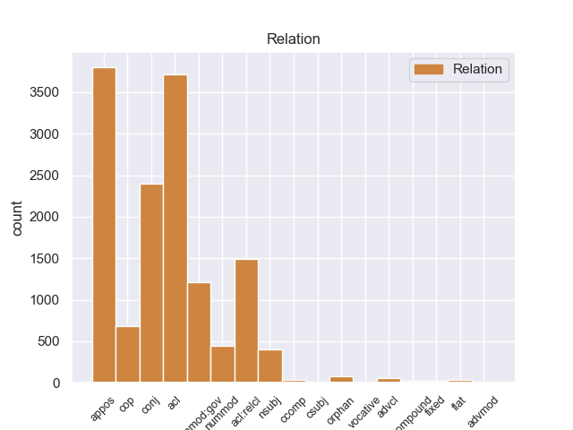
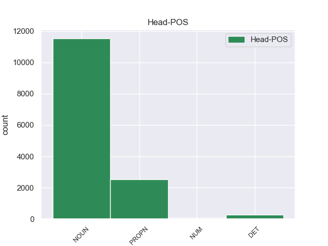
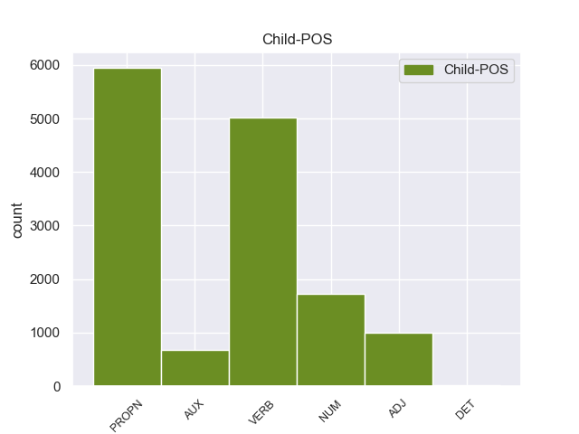

Distribution of features within this leaf



Agreement Rules sorted by frequency.
- When the dependent token is the adjectival clause(acl) of the head token, and the head token is NOUN and the dependent token is VERB.
1 Он _ _ _ _ 0 _ _ _
2 осторожно _ _ _ _ 0 _ _ _
3 , _ _ _ _ 0 _ _ _
4 за _ _ _ _ 0 _ _ _
5 дужку _ _ _ _ 0 _ _ _
6 , _ _ _ _ 0 _ _ _
7 снял _ _ _ _ 0 _ _ _
8 очки _ _ _ _ 0 _ _ _
9 , _ _ _ _ 0 _ _ _
10 ему _ _ _ _ 0 _ _ _
11 хотелось _ _ _ _ 0 _ _ _
12 получше _ _ _ _ 0 _ _ _
13 рассмотреть _ _ _ _ 0 _ _ _
14 человека человек NOUN _ Animacy=Anim|Case=Acc|Gender=Masc|Number=Sing 0 _ _ _
15 , _ _ _ _ 0 _ _ _
16 задающего задавать VERB _ Animacy=Anim|Aspect=Imp|Case=Acc|Gender=Masc|Number=Sing|Tense=Pres|VerbForm=Part|Voice=Act 14 acl 14:acl _
17 такие _ _ _ _ 0 _ _ _
18 несуразные _ _ _ _ 0 _ _ _
19 вопросы _ _ _ _ 0 _ _ _
20 , _ _ _ _ 0 _ _ _
21 а _ _ _ _ 0 _ _ _
22 припылившиеся _ _ _ _ 0 _ _ _
23 стекла _ _ _ _ 0 _ _ _
24 только _ _ _ _ 0 _ _ _
25 мешали _ _ _ _ 0 _ _ _
26 . _ _ _ _ 0 _ _ _
1 И _ _ _ _ 0 _ _ _
2 была _ _ _ _ 0 _ _ _
3 смуглая _ _ _ _ 0 _ _ _
4 девочка девочка NOUN _ Animacy=Anim|Case=Nom|Gender=Fem|Number=Sing 0 _ _ _
5 с _ _ _ _ 0 _ _ _
6 безжалостно _ _ _ _ 0 _ _ _
7 исцарапанными _ _ _ _ 0 _ _ _
8 ногами _ _ _ _ 0 _ _ _
9 , _ _ _ _ 0 _ _ _
10 сбитыми _ _ _ _ 0 _ _ _
11 коленями _ _ _ _ 0 _ _ _
12 , _ _ _ _ 0 _ _ _
13 острыми _ _ _ _ 0 _ _ _
14 лопатками _ _ _ _ 0 _ _ _
15 задиры _ _ _ _ 0 _ _ _
16 - _ _ _ _ 0 _ _ _
17 вылитая _ _ _ _ 0 _ _ _
18 Галя Галя PROPN _ Animacy=Anim|Case=Nom|Gender=Fem|Number=Sing 4 appos 4:appos SpaceAfter=No
19 , _ _ _ _ 0 _ _ _
20 и _ _ _ _ 0 _ _ _
21 воспитательница _ _ _ _ 0 _ _ _
22 , _ _ _ _ 0 _ _ _
23 учившая _ _ _ _ 0 _ _ _
24 детей _ _ _ _ 0 _ _ _
25 какой-то _ _ _ _ 0 _ _ _
26 игре _ _ _ _ 0 _ _ _
27 , _ _ _ _ 0 _ _ _
28 на _ _ _ _ 0 _ _ _
29 мгновение _ _ _ _ 0 _ _ _
30 повернула _ _ _ _ 0 _ _ _
31 ко _ _ _ _ 0 _ _ _
32 мне _ _ _ _ 0 _ _ _
33 светлую _ _ _ _ 0 _ _ _
34 лунность _ _ _ _ 0 _ _ _
35 круглого _ _ _ _ 0 _ _ _
36 Муриного _ _ _ _ 0 _ _ _
37 лица _ _ _ _ 0 _ _ _
38 . _ _ _ _ 0 _ _ _
1 Одно один NUM _ Case=Acc|Gender=Neut 3 nummod:gov 3:nummod:gov _
2 красное _ _ _ _ 0 _ _ _
3 перышко перышко NOUN _ Animacy=Inan|Case=Acc|Gender=Neut|Number=Sing 0 _ _ _
4 Павлов _ _ _ _ 0 _ _ _
5 взял _ _ _ _ 0 _ _ _
6 с _ _ _ _ 0 _ _ _
7 собой _ _ _ _ 0 _ _ _
8 : _ _ _ _ 0 _ _ _
9 он _ _ _ _ 0 _ _ _
10 уже _ _ _ _ 0 _ _ _
11 научил _ _ _ _ 0 _ _ _
12 близнецов _ _ _ _ 0 _ _ _
13 грубости _ _ _ _ 0 _ _ _
14 недоверия _ _ _ _ 0 _ _ _
15 и _ _ _ _ 0 _ _ _
16 потому _ _ _ _ 0 _ _ _
17 нуждался _ _ _ _ 0 _ _ _
18 в _ _ _ _ 0 _ _ _
19 вещественном _ _ _ _ 0 _ _ _
20 доказательстве _ _ _ _ 0 _ _ _
21 . _ _ _ _ 0 _ _ _
1 Волховский _ _ _ _ 0 _ _ _
2 фронт _ _ _ _ 0 _ _ _
3 , _ _ _ _ 0 _ _ _
4 хотя _ _ _ _ 0 _ _ _
5 и _ _ _ _ 0 _ _ _
6 связанный _ _ _ _ 0 _ _ _
7 напрямую _ _ _ _ 0 _ _ _
8 с _ _ _ _ 0 _ _ _
9 Москвой _ _ _ _ 0 _ _ _
10 тремя _ _ _ _ 0 _ _ _
11 железными _ _ _ _ 0 _ _ _
12 дорогами _ _ _ _ 0 _ _ _
13 - _ _ _ _ 0 _ _ _
14 через _ _ _ _ 0 _ _ _
15 Вишеру Вишера PROPN _ Animacy=Inan|Case=Acc|Gender=Fem|Number=Sing 0 _ _ _
16 , _ _ _ _ 0 _ _ _
17 Неболчи Неболчи PROPN _ Animacy=Inan|Case=Acc|Gender=Fem|Number=Plur 15 conj 15:conj _
18 и _ _ _ _ 0 _ _ _
19 Тихвин _ _ _ _ 0 _ _ _
20 , _ _ _ _ 0 _ _ _
21 - _ _ _ _ 0 _ _ _
22 снабжался _ _ _ _ 0 _ _ _
23 плохо _ _ _ _ 0 _ _ _
24 , _ _ _ _ 0 _ _ _
25 словно _ _ _ _ 0 _ _ _
26 ему _ _ _ _ 0 _ _ _
27 полагалось _ _ _ _ 0 _ _ _
28 хоть _ _ _ _ 0 _ _ _
29 в _ _ _ _ 0 _ _ _
30 малой _ _ _ _ 0 _ _ _
31 мере _ _ _ _ 0 _ _ _
32 делить _ _ _ _ 0 _ _ _
33 судьбу _ _ _ _ 0 _ _ _
34 блокадного _ _ _ _ 0 _ _ _
35 Ленинграда _ _ _ _ 0 _ _ _
36 , _ _ _ _ 0 _ _ _
37 который _ _ _ _ 0 _ _ _
38 он _ _ _ _ 0 _ _ _
39 никак _ _ _ _ 0 _ _ _
40 не _ _ _ _ 0 _ _ _
41 мог _ _ _ _ 0 _ _ _
42 освободить _ _ _ _ 0 _ _ _
43 . _ _ _ _ 0 _ _ _
1 Я _ _ _ _ 0 _ _ _
2 шел _ _ _ _ 0 _ _ _
3 дальше _ _ _ _ 0 _ _ _
4 через _ _ _ _ 0 _ _ _
5 поле _ _ _ _ 0 _ _ _
6 и _ _ _ _ 0 _ _ _
7 прекрасный _ _ _ _ 0 _ _ _
8 , _ _ _ _ 0 _ _ _
9 медово _ _ _ _ 0 _ _ _
10 благоухающий _ _ _ _ 0 _ _ _
11 , _ _ _ _ 0 _ _ _
12 сыроватый _ _ _ _ 0 _ _ _
13 овраг _ _ _ _ 0 _ _ _
14 на _ _ _ _ 0 _ _ _
15 взгорок взгорок NOUN _ Animacy=Inan|Case=Acc|Gender=Masc|Number=Sing 0 _ _ _
16 , _ _ _ _ 0 _ _ _
17 по _ _ _ _ 0 _ _ _
18 которому _ _ _ _ 0 _ _ _
19 простирался простираться VERB _ Aspect=Imp|Gender=Masc|Mood=Ind|Number=Sing|Tense=Past|VerbForm=Fin|Voice=Mid 15 acl:relcl 15:acl:relcl _
20 на _ _ _ _ 0 _ _ _
21 километры _ _ _ _ 0 _ _ _
22 великолепный _ _ _ _ 0 _ _ _
23 смешанный _ _ _ _ 0 _ _ _
24 лес _ _ _ _ 0 _ _ _
25 с _ _ _ _ 0 _ _ _
26 густым _ _ _ _ 0 _ _ _
27 , _ _ _ _ 0 _ _ _
28 щедрым _ _ _ _ 0 _ _ _
29 подлеском _ _ _ _ 0 _ _ _
30 . _ _ _ _ 0 _ _ _
1 Осталась _ _ _ _ 0 _ _ _
2 комната _ _ _ _ 0 _ _ _
3 с _ _ _ _ 0 _ _ _
4 трапецией _ _ _ _ 0 _ _ _
5 , _ _ _ _ 0 _ _ _
6 игрушками _ _ _ _ 0 _ _ _
7 и _ _ _ _ 0 _ _ _
8 пухлыми _ _ _ _ 0 _ _ _
9 томами _ _ _ _ 0 _ _ _
10 " _ _ _ _ 0 _ _ _
11 Трех _ _ _ _ 0 _ _ _
12 мушкетеров _ _ _ _ 0 _ _ _
13 " _ _ _ _ 0 _ _ _
14 ; _ _ _ _ 0 _ _ _
15 остался _ _ _ _ 0 _ _ _
16 двор _ _ _ _ 0 _ _ _
17 с _ _ _ _ 0 _ _ _
18 его _ _ _ _ 0 _ _ _
19 волнующей _ _ _ _ 0 _ _ _
20 и _ _ _ _ 0 _ _ _
21 в _ _ _ _ 0 _ _ _
22 чем-то _ _ _ _ 0 _ _ _
23 главном _ _ _ _ 0 _ _ _
24 недоступной _ _ _ _ 0 _ _ _
25 мне _ _ _ _ 0 _ _ _
26 жизнью _ _ _ _ 0 _ _ _
27 ; _ _ _ _ 0 _ _ _
28 впереди _ _ _ _ 0 _ _ _
29 была _ _ _ _ 0 _ _ _
30 чудесная _ _ _ _ 0 _ _ _
31 акуловская _ _ _ _ 0 _ _ _
32 дача _ _ _ _ 0 _ _ _
33 с _ _ _ _ 0 _ _ _
34 извилистой _ _ _ _ 0 _ _ _
35 Учей _ _ _ _ 0 _ _ _
36 , _ _ _ _ 0 _ _ _
37 дремучим _ _ _ _ 0 _ _ _
38 еловым _ _ _ _ 0 _ _ _
39 бором _ _ _ _ 0 _ _ _
40 , _ _ _ _ 0 _ _ _
41 непролазными _ _ _ _ 0 _ _ _
42 ольшаниками _ _ _ _ 0 _ _ _
43 и _ _ _ _ 0 _ _ _
44 великовозрастным _ _ _ _ 0 _ _ _
45 Колькой Колька PROPN _ Animacy=Inan|Case=Ins|Gender=Masc|Number=Sing 0 _ _ _
46 Шугаевым Шугаев PROPN _ Animacy=Inan|Case=Ins|Gender=Masc|Number=Sing 45 appos 45:appos SpaceAfter=No
47 , _ _ _ _ 0 _ _ _
48 посвящавшим _ _ _ _ 0 _ _ _
49 меня _ _ _ _ 0 _ _ _
50 в _ _ _ _ 0 _ _ _
51 тайное _ _ _ _ 0 _ _ _
52 тайных _ _ _ _ 0 _ _ _
53 . _ _ _ _ 0 _ _ _
1 Да _ _ _ _ 0 _ _ _
2 , _ _ _ _ 0 _ _ _
3 это _ _ _ _ 0 _ _ _
4 была быть AUX _ Aspect=Imp|Gender=Fem|Mood=Ind|Number=Sing|Tense=Past|VerbForm=Fin|Voice=Act 5 cop 5:cop _
5 работка работка NOUN _ Animacy=Inan|Case=Nom|Gender=Fem|Number=Sing 0 _ _ _
6 ! _ _ _ _ 0 _ _ _
1 В _ _ _ _ 0 _ _ _
2 трудную _ _ _ _ 0 _ _ _
3 минуту _ _ _ _ 0 _ _ _
4 жизни _ _ _ _ 0 _ _ _
5 Павлов _ _ _ _ 0 _ _ _
6 убедился _ _ _ _ 0 _ _ _
7 , _ _ _ _ 0 _ _ _
8 что _ _ _ _ 0 _ _ _
9 не _ _ _ _ 0 _ _ _
10 совершил _ _ _ _ 0 _ _ _
11 ошибки _ _ _ _ 0 _ _ _
12 в _ _ _ _ 0 _ _ _
13 то _ _ _ _ 0 _ _ _
14 , _ _ _ _ 0 _ _ _
15 уже _ _ _ _ 0 _ _ _
16 далекое _ _ _ _ 0 _ _ _
17 утро _ _ _ _ 0 _ _ _
18 , _ _ _ _ 0 _ _ _
19 когда _ _ _ _ 0 _ _ _
20 по _ _ _ _ 0 _ _ _
21 одному один NUM _ Case=Dat|Gender=Neut 22 nummod 22:nummod _
22 движению движение NOUN _ Animacy=Inan|Case=Dat|Gender=Neut|Number=Sing 0 _ _ _
23 круглых _ _ _ _ 0 _ _ _
24 , _ _ _ _ 0 _ _ _
25 сильных _ _ _ _ 0 _ _ _
26 рук _ _ _ _ 0 _ _ _
27 , _ _ _ _ 0 _ _ _
28 медленно _ _ _ _ 0 _ _ _
29 всплывшим _ _ _ _ 0 _ _ _
30 к _ _ _ _ 0 _ _ _
31 тяжелым _ _ _ _ 0 _ _ _
32 волосам _ _ _ _ 0 _ _ _
33 , _ _ _ _ 0 _ _ _
34 угадал _ _ _ _ 0 _ _ _
35 спасительную _ _ _ _ 0 _ _ _
36 мощь _ _ _ _ 0 _ _ _
37 будущей _ _ _ _ 0 _ _ _
38 своей _ _ _ _ 0 _ _ _
39 спутницы _ _ _ _ 0 _ _ _
40 на _ _ _ _ 0 _ _ _
41 радость _ _ _ _ 0 _ _ _
42 и _ _ _ _ 0 _ _ _
43 горе _ _ _ _ 0 _ _ _
44 . _ _ _ _ 0 _ _ _
1 Радостно _ _ _ _ 0 _ _ _
2 - _ _ _ _ 0 _ _ _
3 тревожное _ _ _ _ 0 _ _ _
4 чувство _ _ _ _ 0 _ _ _
5 владело _ _ _ _ 0 _ _ _
6 мною _ _ _ _ 0 _ _ _
7 : _ _ _ _ 0 _ _ _
8 я _ _ _ _ 0 _ _ _
9 знал _ _ _ _ 0 _ _ _
10 , _ _ _ _ 0 _ _ _
11 что _ _ _ _ 0 _ _ _
12 ушел _ _ _ _ 0 _ _ _
13 не _ _ _ _ 0 _ _ _
14 так _ _ _ _ 0 _ _ _
15 уж _ _ _ _ 0 _ _ _
16 далеко _ _ _ _ 0 _ _ _
17 и _ _ _ _ 0 _ _ _
18 все _ _ _ _ 0 _ _ _
19 же _ _ _ _ 0 _ _ _
20 куда _ _ _ _ 0 _ _ _
21 сильнее _ _ _ _ 0 _ _ _
22 оторвался _ _ _ _ 0 _ _ _
23 от _ _ _ _ 0 _ _ _
24 дома _ _ _ _ 0 _ _ _
25 , _ _ _ _ 0 _ _ _
26 чем _ _ _ _ 0 _ _ _
27 если _ _ _ _ 0 _ _ _
28 бы _ _ _ _ 0 _ _ _
29 забрел _ _ _ _ 0 _ _ _
30 в _ _ _ _ 0 _ _ _
31 последнюю _ _ _ _ 0 _ _ _
32 даль _ _ _ _ 0 _ _ _
33 по _ _ _ _ 0 _ _ _
34 знакомой знакомый ADJ _ Case=Dat|Degree=Pos|Gender=Fem|Number=Sing 37 acl 37:acl SpaceAfter=No
35 , _ _ _ _ 0 _ _ _
36 проторенной _ _ _ _ 0 _ _ _
37 тропке тропка NOUN _ Animacy=Inan|Case=Dat|Gender=Fem|Number=Sing 0 _ _ _
38 . _ _ _ _ 0 _ _ _
1 Не _ _ _ _ 0 _ _ _
2 прекращающаяся _ _ _ _ 0 _ _ _
3 даже _ _ _ _ 0 _ _ _
4 в _ _ _ _ 0 _ _ _
5 дреме _ _ _ _ 0 _ _ _
6 работа _ _ _ _ 0 _ _ _
7 громадных _ _ _ _ 0 _ _ _
8 челюстей _ _ _ _ 0 _ _ _
9 не _ _ _ _ 0 _ _ _
10 рождала _ _ _ _ 0 _ _ _
11 и _ _ _ _ 0 _ _ _
12 малого _ _ _ _ 0 _ _ _
13 звука _ _ _ _ 0 _ _ _
14 , _ _ _ _ 0 _ _ _
15 но _ _ _ _ 0 _ _ _
16 я _ _ _ _ 0 _ _ _
17 видел _ _ _ _ 0 _ _ _
18 не _ _ _ _ 0 _ _ _
19 раз _ _ _ _ 0 _ _ _
20 такое _ _ _ _ 0 _ _ _
21 же _ _ _ _ 0 _ _ _
22 бесшумное _ _ _ _ 0 _ _ _
23 , _ _ _ _ 0 _ _ _
24 недвижное _ _ _ _ 0 _ _ _
25 стадо _ _ _ _ 0 _ _ _
26 на _ _ _ _ 0 _ _ _
27 густо _ _ _ _ 0 _ _ _
28 - _ _ _ _ 0 _ _ _
29 зеленом _ _ _ _ 0 _ _ _
30 , _ _ _ _ 0 _ _ _
31 влажном _ _ _ _ 0 _ _ _
32 берегу _ _ _ _ 0 _ _ _
33 Серебрянки Серебрянка PROPN _ Animacy=Inan|Case=Gen|Gender=Fem|Number=Sing 0 _ _ _
34 , _ _ _ _ 0 _ _ _
35 почти _ _ _ _ 0 _ _ _
36 незримо _ _ _ _ 0 _ _ _
37 существующей существовать VERB _ Aspect=Imp|Case=Gen|Gender=Fem|Number=Sing|Tense=Pres|VerbForm=Part|Voice=Act 33 acl 33:acl _
38 в _ _ _ _ 0 _ _ _
39 зарослях _ _ _ _ 0 _ _ _
40 осоки _ _ _ _ 0 _ _ _
41 , _ _ _ _ 0 _ _ _
42 камыша _ _ _ _ 0 _ _ _
43 и _ _ _ _ 0 _ _ _
44 лозин _ _ _ _ 0 _ _ _
45 , _ _ _ _ 0 _ _ _
46 и _ _ _ _ 0 _ _ _
47 так _ _ _ _ 0 _ _ _
48 же _ _ _ _ 0 _ _ _
49 пугался _ _ _ _ 0 _ _ _
50 зачарованной _ _ _ _ 0 _ _ _
51 тихости _ _ _ _ 0 _ _ _
52 обычно _ _ _ _ 0 _ _ _
53 столь _ _ _ _ 0 _ _ _
54 щедро _ _ _ _ 0 _ _ _
55 озвученных _ _ _ _ 0 _ _ _
56 в _ _ _ _ 0 _ _ _
57 каждом _ _ _ _ 0 _ _ _
58 жизненном _ _ _ _ 0 _ _ _
59 процессе _ _ _ _ 0 _ _ _
60 животных _ _ _ _ 0 _ _ _
61 . _ _ _ _ 0 _ _ _
1 Я _ _ _ _ 0 _ _ _
2 думаю _ _ _ _ 0 _ _ _
3 , _ _ _ _ 0 _ _ _
4 что _ _ _ _ 0 _ _ _
5 этот _ _ _ _ 0 _ _ _
6 вопрос _ _ _ _ 0 _ _ _
7 в _ _ _ _ 0 _ _ _
8 данном _ _ _ _ 0 _ _ _
9 случае _ _ _ _ 0 _ _ _
10 не _ _ _ _ 0 _ _ _
11 правомерен _ _ _ _ 0 _ _ _
12 : _ _ _ _ 0 _ _ _
13 родной _ _ _ _ 0 _ _ _
14 - _ _ _ _ 0 _ _ _
15 это _ _ _ _ 0 _ _ _
16 родной _ _ _ _ 0 _ _ _
17 ( _ _ _ _ 0 _ _ _
18 как _ _ _ _ 0 _ _ _
19 мать мать NOUN _ Animacy=Anim|Case=Nom|Gender=Fem|Number=Sing 0 _ _ _
20 , _ _ _ _ 0 _ _ _
21 отец _ _ _ _ 0 _ _ _
22 , _ _ _ _ 0 _ _ _
23 Родина Родина PROPN _ Animacy=Inan|Case=Nom|Gender=Fem|Number=Sing 19 conj 19:conj SpaceAfter=No
24 ) _ _ _ _ 0 _ _ _
25 , _ _ _ _ 0 _ _ _
26 а _ _ _ _ 0 _ _ _
27 приобретенный _ _ _ _ 0 _ _ _
28 - _ _ _ _ 0 _ _ _
29 для _ _ _ _ 0 _ _ _
30 дела _ _ _ _ 0 _ _ _
31 , _ _ _ _ 0 _ _ _
32 для _ _ _ _ 0 _ _ _
33 жизни _ _ _ _ 0 _ _ _
34 , _ _ _ _ 0 _ _ _
35 для _ _ _ _ 0 _ _ _
36 общения _ _ _ _ 0 _ _ _
37 с _ _ _ _ 0 _ _ _
38 людьми _ _ _ _ 0 _ _ _
39 других _ _ _ _ 0 _ _ _
40 национальностей _ _ _ _ 0 _ _ _
41 . _ _ _ _ 0 _ _ _
1 Тенненбаум Тенненбаум PROPN _ Animacy=Anim|Case=Nom|Gender=Masc|Number=Sing 5 nsubj 5:nsubj _
2 был _ _ _ _ 0 _ _ _
3 не _ _ _ _ 0 _ _ _
4 только _ _ _ _ 0 _ _ _
5 чемпионом чемпион NOUN _ Animacy=Anim|Case=Ins|Gender=Masc|Number=Sing 0 _ _ _
6 Иркутска _ _ _ _ 0 _ _ _
7 , _ _ _ _ 0 _ _ _
8 но _ _ _ _ 0 _ _ _
9 и _ _ _ _ 0 _ _ _
10 победителем _ _ _ _ 0 _ _ _
11 всесибирских _ _ _ _ 0 _ _ _
12 велогонок _ _ _ _ 0 _ _ _
13 , _ _ _ _ 0 _ _ _
14 словом _ _ _ _ 0 _ _ _
15 , _ _ _ _ 0 _ _ _
16 звезда _ _ _ _ 0 _ _ _
17 первой _ _ _ _ 0 _ _ _
18 величины _ _ _ _ 0 _ _ _
19 в _ _ _ _ 0 _ _ _
20 тогдашнем _ _ _ _ 0 _ _ _
21 спорте _ _ _ _ 0 _ _ _
22 . _ _ _ _ 0 _ _ _
1 - _ _ _ _ 0 _ _ _
2 Обедать _ _ _ _ 0 _ _ _
3 ! _ _ _ _ 0 _ _ _
4 … _ _ _ _ 0 _ _ _
5 - _ _ _ _ 0 _ _ _
6 послышался _ _ _ _ 0 _ _ _
7 голос _ _ _ _ 0 _ _ _
8 мамы _ _ _ _ 0 _ _ _
9 , _ _ _ _ 0 _ _ _
10 и _ _ _ _ 0 _ _ _
11 , _ _ _ _ 0 _ _ _
12 грустно _ _ _ _ 0 _ _ _
13 окинув _ _ _ _ 0 _ _ _
14 взглядом _ _ _ _ 0 _ _ _
15 свой свой DET _ Case=Acc|Gender=Masc|Number=Sing 0 _ _ _
16 прекрасно _ _ _ _ 0 _ _ _
17 оснащенный _ _ _ _ 0 _ _ _
18 , _ _ _ _ 0 _ _ _
19 с _ _ _ _ 0 _ _ _
20 поднятыми _ _ _ _ 0 _ _ _
21 парусами _ _ _ _ 0 _ _ _
22 , _ _ _ _ 0 _ _ _
23 с _ _ _ _ 0 _ _ _
24 полными _ _ _ _ 0 _ _ _
25 трюмами _ _ _ _ 0 _ _ _
26 , _ _ _ _ 0 _ _ _
27 готовый готовый ADJ _ Animacy=Inan|Case=Acc|Degree=Pos|Gender=Masc|Number=Sing 15 conj 15:conj _
28 к _ _ _ _ 0 _ _ _
29 покорению _ _ _ _ 0 _ _ _
30 пространства _ _ _ _ 0 _ _ _
31 корабль _ _ _ _ 0 _ _ _
32 , _ _ _ _ 0 _ _ _
33 я _ _ _ _ 0 _ _ _
34 сошел _ _ _ _ 0 _ _ _
35 на _ _ _ _ 0 _ _ _
36 сушу _ _ _ _ 0 _ _ _
37 . _ _ _ _ 0 _ _ _
1 Иркутскую _ _ _ _ 0 _ _ _
2 жизнь _ _ _ _ 0 _ _ _
3 я _ _ _ _ 0 _ _ _
4 помню _ _ _ _ 0 _ _ _
5 всю _ _ _ _ 0 _ _ _
6 изо _ _ _ _ 0 _ _ _
7 дня _ _ _ _ 0 _ _ _
8 в _ _ _ _ 0 _ _ _
9 день _ _ _ _ 0 _ _ _
10 , _ _ _ _ 0 _ _ _
11 там _ _ _ _ 0 _ _ _
12 не _ _ _ _ 0 _ _ _
13 было _ _ _ _ 0 _ _ _
14 ничего _ _ _ _ 0 _ _ _
15 второстепенного _ _ _ _ 0 _ _ _
16 , _ _ _ _ 0 _ _ _
17 его _ _ _ _ 0 _ _ _
18 и _ _ _ _ 0 _ _ _
19 вообще _ _ _ _ 0 _ _ _
20 не _ _ _ _ 0 _ _ _
21 бывает _ _ _ _ 0 _ _ _
22 на _ _ _ _ 0 _ _ _
23 переломе _ _ _ _ 0 _ _ _
24 жизни жизнь NOUN _ Animacy=Inan|Case=Gen|Gender=Fem|Number=Sing 0 _ _ _
25 , _ _ _ _ 0 _ _ _
26 пусть _ _ _ _ 0 _ _ _
27 даже _ _ _ _ 0 _ _ _
28 детской детский ADJ _ Case=Gen|Degree=Pos|Gender=Fem|Number=Sing 24 conj 24:conj SpaceAfter=No
29 . _ _ _ _ 0 _ _ _
1 Волховский _ _ _ _ 0 _ _ _
2 фронт _ _ _ _ 0 _ _ _
3 , _ _ _ _ 0 _ _ _
4 хотя _ _ _ _ 0 _ _ _
5 и _ _ _ _ 0 _ _ _
6 связанный _ _ _ _ 0 _ _ _
7 напрямую _ _ _ _ 0 _ _ _
8 с _ _ _ _ 0 _ _ _
9 Москвой _ _ _ _ 0 _ _ _
10 тремя _ _ _ _ 0 _ _ _
11 железными _ _ _ _ 0 _ _ _
12 дорогами _ _ _ _ 0 _ _ _
13 - _ _ _ _ 0 _ _ _
14 через _ _ _ _ 0 _ _ _
15 Вишеру _ _ _ _ 0 _ _ _
16 , _ _ _ _ 0 _ _ _
17 Неболчи _ _ _ _ 0 _ _ _
18 и _ _ _ _ 0 _ _ _
19 Тихвин _ _ _ _ 0 _ _ _
20 , _ _ _ _ 0 _ _ _
21 - _ _ _ _ 0 _ _ _
22 снабжался _ _ _ _ 0 _ _ _
23 плохо _ _ _ _ 0 _ _ _
24 , _ _ _ _ 0 _ _ _
25 словно _ _ _ _ 0 _ _ _
26 ему _ _ _ _ 0 _ _ _
27 полагалось _ _ _ _ 0 _ _ _
28 хоть _ _ _ _ 0 _ _ _
29 в _ _ _ _ 0 _ _ _
30 малой _ _ _ _ 0 _ _ _
31 мере _ _ _ _ 0 _ _ _
32 делить _ _ _ _ 0 _ _ _
33 судьбу _ _ _ _ 0 _ _ _
34 блокадного _ _ _ _ 0 _ _ _
35 Ленинграда Ленинград PROPN _ Animacy=Inan|Case=Gen|Gender=Masc|Number=Sing 0 _ _ _
36 , _ _ _ _ 0 _ _ _
37 который _ _ _ _ 0 _ _ _
38 он _ _ _ _ 0 _ _ _
39 никак _ _ _ _ 0 _ _ _
40 не _ _ _ _ 0 _ _ _
41 мог мочь VERB _ Aspect=Imp|Gender=Masc|Mood=Ind|Number=Sing|Tense=Past|VerbForm=Fin|Voice=Act 35 acl:relcl 35:acl:relcl _
42 освободить _ _ _ _ 0 _ _ _
43 . _ _ _ _ 0 _ _ _
1 Для _ _ _ _ 0 _ _ _
2 нас _ _ _ _ 0 _ _ _
3 особенно _ _ _ _ 0 _ _ _
4 важно _ _ _ _ 0 _ _ _
5 , _ _ _ _ 0 _ _ _
6 что _ _ _ _ 0 _ _ _
7 М. _ _ _ _ 0 _ _ _
8 Стрийковский _ _ _ _ 0 _ _ _
9 сохранил _ _ _ _ 0 _ _ _
10 в _ _ _ _ 0 _ _ _
11 своей _ _ _ _ 0 _ _ _
12 " _ _ _ _ 0 _ _ _
13 Хронике _ _ _ _ 0 _ _ _
14 " _ _ _ _ 0 _ _ _
15 то _ _ _ _ 0 _ _ _
16 понимание понимание NOUN _ Animacy=Inan|Case=Acc|Gender=Neut|Number=Sing 0 _ _ _
17 русской _ _ _ _ 0 _ _ _
18 церковной _ _ _ _ 0 _ _ _
19 истории _ _ _ _ 0 _ _ _
20 , _ _ _ _ 0 _ _ _
21 которое _ _ _ _ 0 _ _ _
22 было _ _ _ _ 0 _ _ _
23 привычно привычный ADJ _ Degree=Pos|Gender=Neut|Number=Sing|Variant=Short 16 acl:relcl 16:acl:relcl _
24 русским _ _ _ _ 0 _ _ _
25 , _ _ _ _ 0 _ _ _
26 полякам _ _ _ _ 0 _ _ _
27 , _ _ _ _ 0 _ _ _
28 литовцам _ _ _ _ 0 _ _ _
29 . _ _ _ _ 0 _ _ _
1 Это _ _ _ _ 0 _ _ _
2 был _ _ _ _ 0 _ _ _
3 гриб гриб NOUN _ Animacy=Inan|Case=Nom|Gender=Masc|Number=Sing 0 _ _ _
4 - _ _ _ _ 0 _ _ _
5 генерал _ _ _ _ 0 _ _ _
6 , _ _ _ _ 0 _ _ _
7 настоящий _ _ _ _ 0 _ _ _
8 предводитель _ _ _ _ 0 _ _ _
9 грибной _ _ _ _ 0 _ _ _
10 рати _ _ _ _ 0 _ _ _
11 , _ _ _ _ 0 _ _ _
12 он _ _ _ _ 0 _ _ _
13 не _ _ _ _ 0 _ _ _
14 мог _ _ _ _ 0 _ _ _
15 расти _ _ _ _ 0 _ _ _
16 в _ _ _ _ 0 _ _ _
17 одиночку _ _ _ _ 0 _ _ _
18 , _ _ _ _ 0 _ _ _
19 и _ _ _ _ 0 _ _ _
20 надо _ _ _ _ 0 _ _ _
21 было _ _ _ _ 0 _ _ _
22 обрыскать _ _ _ _ 0 _ _ _
23 хвойное _ _ _ _ 0 _ _ _
24 одеяло _ _ _ _ 0 _ _ _
25 у _ _ _ _ 0 _ _ _
26 подножия _ _ _ _ 0 _ _ _
27 ближайших _ _ _ _ 0 _ _ _
28 елей _ _ _ _ 0 _ _ _
29 , _ _ _ _ 0 _ _ _
30 но _ _ _ _ 0 _ _ _
31 я _ _ _ _ 0 _ _ _
32 как-то _ _ _ _ 0 _ _ _
33 ленился _ _ _ _ 0 _ _ _
34 , _ _ _ _ 0 _ _ _
35 и _ _ _ _ 0 _ _ _
36 тут _ _ _ _ 0 _ _ _
37 совсем _ _ _ _ 0 _ _ _
38 отчетливо _ _ _ _ 0 _ _ _
39 , _ _ _ _ 0 _ _ _
40 слышимый _ _ _ _ 0 _ _ _
41 не _ _ _ _ 0 _ _ _
42 внутренним _ _ _ _ 0 _ _ _
43 , _ _ _ _ 0 _ _ _
44 а _ _ _ _ 0 _ _ _
45 внешним _ _ _ _ 0 _ _ _
46 слухом _ _ _ _ 0 _ _ _
47 , _ _ _ _ 0 _ _ _
48 голос _ _ _ _ 0 _ _ _
49 , _ _ _ _ 0 _ _ _
50 исполненный _ _ _ _ 0 _ _ _
51 той _ _ _ _ 0 _ _ _
52 чистой _ _ _ _ 0 _ _ _
53 нежности _ _ _ _ 0 _ _ _
54 , _ _ _ _ 0 _ _ _
55 что _ _ _ _ 0 _ _ _
56 берегла _ _ _ _ 0 _ _ _
57 меня _ _ _ _ 0 _ _ _
58 в _ _ _ _ 0 _ _ _
59 детстве _ _ _ _ 0 _ _ _
60 , _ _ _ _ 0 _ _ _
61 произнес произнести VERB _ Aspect=Perf|Gender=Masc|Mood=Ind|Number=Sing|Tense=Past|VerbForm=Fin|Voice=Act 3 conj 3:conj SpaceAfter=No
62 : _ _ _ _ 0 _ _ _
63 - _ _ _ _ 0 _ _ _
64 Ищи _ _ _ _ 0 _ _ _
65 , _ _ _ _ 0 _ _ _
66 мальчик _ _ _ _ 0 _ _ _
67 , _ _ _ _ 0 _ _ _
68 ты _ _ _ _ 0 _ _ _
69 нырок _ _ _ _ 0 _ _ _
70 ! _ _ _ _ 0 _ _ _
71 . _ _ _ _ 0 _ _ _
72 . _ _ _ _ 0 _ _ _
1 Страны _ _ _ _ 0 _ _ _
2 социализма _ _ _ _ 0 _ _ _
3 уже _ _ _ _ 0 _ _ _
4 стали _ _ _ _ 0 _ _ _
5 неотъемлемой _ _ _ _ 0 _ _ _
6 составной _ _ _ _ 0 _ _ _
7 частью _ _ _ _ 0 _ _ _
8 мировой _ _ _ _ 0 _ _ _
9 цивилизации _ _ _ _ 0 _ _ _
10 , _ _ _ _ 0 _ _ _
11 все _ _ _ _ 0 _ _ _
12 более _ _ _ _ 0 _ _ _
13 активно _ _ _ _ 0 _ _ _
14 воздействующей _ _ _ _ 0 _ _ _
15 на _ _ _ _ 0 _ _ _
16 историческое _ _ _ _ 0 _ _ _
17 развитие _ _ _ _ 0 _ _ _
18 остальных _ _ _ _ 0 _ _ _
19 стран _ _ _ _ 0 _ _ _
20 , _ _ _ _ 0 _ _ _
21 но _ _ _ _ 0 _ _ _
22 они _ _ _ _ 0 _ _ _
23 еще _ _ _ _ 0 _ _ _
24 не _ _ _ _ 0 _ _ _
25 превзошли _ _ _ _ 0 _ _ _
26 капитализм _ _ _ _ 0 _ _ _
27 в _ _ _ _ 0 _ _ _
28 экономическом _ _ _ _ 0 _ _ _
29 отношении _ _ _ _ 0 _ _ _
30 ( _ _ _ _ 0 _ _ _
31 производительность _ _ _ _ 0 _ _ _
32 общественного _ _ _ _ 0 _ _ _
33 труда _ _ _ _ 0 _ _ _
34 , _ _ _ _ 0 _ _ _
35 новейшая новый ADJ _ Case=Nom|Degree=Sup|Gender=Fem|Number=Sing 36 nsubj 36:nsubj _
36 технология технология NOUN _ Animacy=Inan|Case=Nom|Gender=Fem|Number=Sing 0 _ _ _
37 и _ _ _ _ 0 _ _ _
38 т. _ _ _ _ 0 _ _ _
39 п _ _ _ _ 0 _ _ _
40 ) _ _ _ _ 0 _ _ _
41 . _ _ _ _ 0 _ _ _
1 Тот тот DET _ Case=Nom|Gender=Masc|Number=Sing 0 _ _ _
2 , _ _ _ _ 0 _ _ _
3 кто _ _ _ _ 0 _ _ _
4 подготовлен подготовить VERB _ Aspect=Perf|Gender=Masc|Number=Sing|Tense=Past|Variant=Short|VerbForm=Part|Voice=Pass 1 acl:relcl 1:acl:relcl _
5 к _ _ _ _ 0 _ _ _
6 ее _ _ _ _ 0 _ _ _
7 решению _ _ _ _ 0 _ _ _
8 , _ _ _ _ 0 _ _ _
9 может _ _ _ _ 0 _ _ _
10 быть _ _ _ _ 0 _ _ _
11 , _ _ _ _ 0 _ _ _
12 ходом _ _ _ _ 0 _ _ _
13 всей _ _ _ _ 0 _ _ _
14 своей _ _ _ _ 0 _ _ _
15 предшествующей _ _ _ _ 0 _ _ _
16 жизни _ _ _ _ 0 _ _ _
17 . _ _ _ _ 0 _ _ _
1 Компания _ _ _ _ 0 _ _ _
2 Ford _ _ _ _ 0 _ _ _
3 выпустила _ _ _ _ 0 _ _ _
4 в _ _ _ _ 0 _ _ _
5 ограниченном _ _ _ _ 0 _ _ _
6 количестве _ _ _ _ 0 _ _ _
7 финальную _ _ _ _ 0 _ _ _
8 версию _ _ _ _ 0 _ _ _
9 модели _ _ _ _ 0 _ _ _
10 Lincoln Lincoln PROPN _ Animacy=Inan|Case=Gen|Foreign=Yes|Gender=Fem|Number=Sing 0 _ _ _
11 continental Continental PROPN _ Animacy=Inan|Case=Gen|Foreign=Yes|Gender=Fem|Number=Sing 10 flat 10:flat SpaceAfter=No
12 . _ _ _ _ 0 _ _ _
1 Кроме _ _ _ _ 0 _ _ _
2 того _ _ _ _ 0 _ _ _
3 , _ _ _ _ 0 _ _ _
4 интенсивное _ _ _ _ 0 _ _ _
5 движение _ _ _ _ 0 _ _ _
6 наблюдается _ _ _ _ 0 _ _ _
7 по _ _ _ _ 0 _ _ _
8 всей _ _ _ _ 0 _ _ _
9 протяженности _ _ _ _ 0 _ _ _
10 Садового _ _ _ _ 0 _ _ _
11 кольца _ _ _ _ 0 _ _ _
12 , _ _ _ _ 0 _ _ _
13 по _ _ _ _ 0 _ _ _
14 Щелковскому _ _ _ _ 0 _ _ _
15 шоссе _ _ _ _ 0 _ _ _
16 и _ _ _ _ 0 _ _ _
17 шоссе _ _ _ _ 0 _ _ _
18 Энтузиастов _ _ _ _ 0 _ _ _
19 , _ _ _ _ 0 _ _ _
20 по _ _ _ _ 0 _ _ _
21 Волгоградскому _ _ _ _ 0 _ _ _
22 и _ _ _ _ 0 _ _ _
23 Рязанскому _ _ _ _ 0 _ _ _
24 проспектам _ _ _ _ 0 _ _ _
25 , _ _ _ _ 0 _ _ _
26 по _ _ _ _ 0 _ _ _
27 улице улица NOUN _ Animacy=Inan|Case=Dat|Gender=Fem|Number=Sing 0 _ _ _
28 Краснопрудная краснопрудный ADJ _ Case=Nom|Degree=Pos|Gender=Fem|Number=Sing 27 appos 27:appos _
29 в _ _ _ _ 0 _ _ _
30 сторону _ _ _ _ 0 _ _ _
31 Комсомольской _ _ _ _ 0 _ _ _
32 площади _ _ _ _ 0 _ _ _
33 и _ _ _ _ 0 _ _ _
34 на _ _ _ _ 0 _ _ _
35 Сущевском _ _ _ _ 0 _ _ _
36 валу _ _ _ _ 0 _ _ _
37 . _ _ _ _ 0 _ _ _
1 Не _ _ _ _ 0 _ _ _
2 раз раз NOUN _ Animacy=Inan|Case=Acc|Gender=Masc|Number=Sing 0 _ _ _
3 и _ _ _ _ 0 _ _ _
4 не _ _ _ _ 0 _ _ _
5 два два NUM _ Animacy=Inan|Case=Acc|Gender=Masc 2 conj 2:conj _
6 спрашивал _ _ _ _ 0 _ _ _
7 себя _ _ _ _ 0 _ _ _
8 Вавилов _ _ _ _ 0 _ _ _
9 : _ _ _ _ 0 _ _ _
10 правильно _ _ _ _ 0 _ _ _
11 ли _ _ _ _ 0 _ _ _
12 он _ _ _ _ 0 _ _ _
13 поступил _ _ _ _ 0 _ _ _
14 ? _ _ _ _ 0 _ _ _
1 Ибо _ _ _ _ 0 _ _ _
2 он _ _ _ _ 0 _ _ _
3 сам _ _ _ _ 0 _ _ _
4 себе _ _ _ _ 0 _ _ _
5 - _ _ _ _ 0 _ _ _
6 мера мера NOUN _ Animacy=Inan|Case=Nom|Gender=Fem|Number=Sing 0 _ _ _
7 всего _ _ _ _ 0 _ _ _
8 сущего _ _ _ _ 0 _ _ _
9 , _ _ _ _ 0 _ _ _
10 даже _ _ _ _ 0 _ _ _
11 если _ _ _ _ 0 _ _ _
12 мысль _ _ _ _ 0 _ _ _
13 об _ _ _ _ 0 _ _ _
14 этом _ _ _ _ 0 _ _ _
15 в _ _ _ _ 0 _ _ _
16 его _ _ _ _ 0 _ _ _
17 сознании _ _ _ _ 0 _ _ _
18 никогда _ _ _ _ 0 _ _ _
19 не _ _ _ _ 0 _ _ _
20 возникала возникать VERB _ Aspect=Imp|Gender=Fem|Mood=Ind|Number=Sing|Tense=Past|VerbForm=Fin|Voice=Act 6 advcl 6:advcl SpaceAfter=No
21 . _ _ _ _ 0 _ _ _
1 Очень _ _ _ _ 0 _ _ _
2 сильная _ _ _ _ 0 _ _ _
3 , _ _ _ _ 0 _ _ _
4 очень _ _ _ _ 0 _ _ _
5 настоящая _ _ _ _ 0 _ _ _
6 любовь _ _ _ _ 0 _ _ _
7 делает _ _ _ _ 0 _ _ _
8 провидцем _ _ _ _ 0 _ _ _
9 всякого _ _ _ _ 0 _ _ _
10 человека _ _ _ _ 0 _ _ _
11 , _ _ _ _ 0 _ _ _
12 даже _ _ _ _ 0 _ _ _
13 такого _ _ _ _ 0 _ _ _
14 маленького _ _ _ _ 0 _ _ _
15 , _ _ _ _ 0 _ _ _
16 каким какой DET _ Case=Ins|Gender=Masc|Number=Sing 0 _ _ _
17 был быть AUX _ Aspect=Imp|Gender=Masc|Mood=Ind|Number=Sing|Tense=Past|VerbForm=Fin|Voice=Act 16 cop 16:cop _
18 я _ _ _ _ 0 _ _ _
19 тогда _ _ _ _ 0 _ _ _
20 . _ _ _ _ 0 _ _ _
1 Шток _ _ _ _ 0 _ _ _
2 , _ _ _ _ 0 _ _ _
3 на _ _ _ _ 0 _ _ _
4 одном _ _ _ _ 0 _ _ _
5 конце _ _ _ _ 0 _ _ _
6 которого _ _ _ _ 0 _ _ _
7 закреплен _ _ _ _ 0 _ _ _
8 рабочий _ _ _ _ 0 _ _ _
9 орган _ _ _ _ 0 _ _ _
10 , _ _ _ _ 0 _ _ _
11 а _ _ _ _ 0 _ _ _
12 на _ _ _ _ 0 _ _ _
When the dependent token is the nominal subject(nsubj) of the head token, and the head token is NOUN and the dependent token is NUM.
1 Одно один NUM _ Case=Nom|Gender=Neut 6 nsubj 6:nsubj _
2 из _ _ _ _ 0 _ _ _
3 таких _ _ _ _ 0 _ _ _
4 направлений _ _ _ _ 0 _ _ _
5 - _ _ _ _ 0 _ _ _
6 получение получение NOUN _ Animacy=Inan|Case=Nom|Gender=Neut|Number=Sing 0 _ _ _
7 в _ _ _ _ 0 _ _ _
8 космосе _ _ _ _ 0 _ _ _
9 материалов _ _ _ _ 0 _ _ _
10 с _ _ _ _ 0 _ _ _
11 уникальными _ _ _ _ 0 _ _ _
12 свойствами _ _ _ _ 0 _ _ _
13 , _ _ _ _ 0 _ _ _
14 недостижимыми _ _ _ _ 0 _ _ _
15 в _ _ _ _ 0 _ _ _
16 земных _ _ _ _ 0 _ _ _
17 условиях _ _ _ _ 0 _ _ _
18 . _ _ _ _ 0 _ _ _
When the dependent token is the copula(cop) of the head token, and the head token is PROPN and the dependent token is AUX.
1 Матери _ _ _ _ 0 _ _ _
2 фамилия _ _ _ _ 0 _ _ _
3 была быть AUX _ Aspect=Imp|Gender=Fem|Mood=Ind|Number=Sing|Tense=Past|VerbForm=Fin|Voice=Act 4 cop 4:cop _
4 Делянкина Делянкина PROPN _ Animacy=Inan|Case=Nom|Gender=Fem|Number=Sing 0 _ _ _
5 , _ _ _ _ 0 _ _ _
6 его _ _ _ _ 0 _ _ _
7 - _ _ _ _ 0 _ _ _
7.1 _ _ _ _ _ 0 _ _ _
8 Гарусов _ _ _ _ 0 _ _ _
9 , _ _ _ _ 0 _ _ _
10 по _ _ _ _ 0 _ _ _
11 отцу _ _ _ _ 0 _ _ _
12 . _ _ _ _ 0 _ _ _
When the dependent token is the numeric modifer governing case of noun(nummod:gov) of the head token, and the head token is NUM and the dependent token is NUM.
1 А _ _ _ _ 0 _ _ _
2 старшие _ _ _ _ 0 _ _ _
3 , _ _ _ _ 0 _ _ _
4 ходячие _ _ _ _ 0 _ _ _
5 - _ _ _ _ 0 _ _ _
6 года _ _ _ _ 0 _ _ _
7 по _ _ _ _ 0 _ _ _
8 полтора полтора NUM _ Case=Acc|Gender=Masc 0 _ _ _
9 - _ _ _ _ 0 _ _ _
10 два два NUM _ Animacy=Inan|Case=Acc|Gender=Masc 8 nummod:gov 8:nummod:gov SpaceAfter=No
11 , _ _ _ _ 0 _ _ _
12 - _ _ _ _ 0 _ _ _
13 как _ _ _ _ 0 _ _ _
14 они _ _ _ _ 0 _ _ _
15 жадно _ _ _ _ 0 _ _ _
16 толпились _ _ _ _ 0 _ _ _
17 вокруг _ _ _ _ 0 _ _ _
18 рояля _ _ _ _ 0 _ _ _
19 ! _ _ _ _ 0 _ _ _
When the dependent token is the nominal subject(nsubj) of the head token, and the head token is PROPN and the dependent token is PROPN.
1 Но _ _ _ _ 0 _ _ _
2 ведь _ _ _ _ 0 _ _ _
3 и _ _ _ _ 0 _ _ _
4 Германия _ _ _ _ 0 _ _ _
5 - _ _ _ _ 0 _ _ _
6 не _ _ _ _ 0 _ _ _
7 Франция _ _ _ _ 0 _ _ _
8 , _ _ _ _ 0 _ _ _
9 и _ _ _ _ 0 _ _ _
10 Эстония Эстония PROPN _ Animacy=Inan|Case=Nom|Gender=Fem|Number=Sing 0 _ _ _
11 - _ _ _ _ 0 _ _ _
12 не _ _ _ _ 0 _ _ _
13 Литва Литва PROPN _ Animacy=Inan|Case=Nom|Gender=Fem|Number=Sing 10 nsubj 10:nsubj SpaceAfter=No
14 . _ _ _ _ 0 _ _ _
When the dependent token is the appositional modifier(appos) of the head token, and the head token is NUM and the dependent token is PROPN.
1 - _ _ _ _ 0 _ _ _
2 На _ _ _ _ 0 _ _ _
3 практике _ _ _ _ 0 _ _ _
4 этот _ _ _ _ 0 _ _ _
5 принцип _ _ _ _ 0 _ _ _
6 был _ _ _ _ 0 _ _ _
7 реализован _ _ _ _ 0 _ _ _
8 , _ _ _ _ 0 _ _ _
9 можно _ _ _ _ 0 _ _ _
10 сказать _ _ _ _ 0 _ _ _
11 , _ _ _ _ 0 _ _ _
12 случайно _ _ _ _ 0 _ _ _
13 , _ _ _ _ 0 _ _ _
14 - _ _ _ _ 0 _ _ _
15 рассказывает _ _ _ _ 0 _ _ _
16 один один NUM _ Case=Nom|Gender=Masc 0 _ _ _
17 из _ _ _ _ 0 _ _ _
18 создателей _ _ _ _ 0 _ _ _
19 таких _ _ _ _ 0 _ _ _
20 станков _ _ _ _ 0 _ _ _
21 , _ _ _ _ 0 _ _ _
22 доктор _ _ _ _ 0 _ _ _
23 технических _ _ _ _ 0 _ _ _
24 наук _ _ _ _ 0 _ _ _
25 П. П. PROPN _ Animacy=Anim|Case=Nom|Gender=Masc|Number=Sing 16 appos 16:appos _
26 М. _ _ _ _ 0 _ _ _
27 Чернянский _ _ _ _ 0 _ _ _
28 . _ _ _ _ 0 _ _ _
When the dependent token is the fixed multiword expression(fixed) of the head token, and the head token is DET and the dependent token is ADJ.
1 Они _ _ _ _ 0 _ _ _
2 ссорятся _ _ _ _ 0 _ _ _
3 , _ _ _ _ 0 _ _ _
4 оскорбляют _ _ _ _ 0 _ _ _
5 друг _ _ _ _ 0 _ _ _
6 друга _ _ _ _ 0 _ _ _
7 , _ _ _ _ 0 _ _ _
8 срывают _ _ _ _ 0 _ _ _
9 один один DET _ Case=Nom|Degree=Pos|Gender=Masc|Number=Sing 0 _ _ _
10 на _ _ _ _ 0 _ _ _
11 другом другой ADJ _ Case=Loc|Degree=Pos|Gender=Masc|Number=Sing 9 fixed 9:fixed _
12 свою _ _ _ _ 0 _ _ _
13 нервную _ _ _ _ 0 _ _ _
14 злобу _ _ _ _ 0 _ _ _
15 - _ _ _ _ 0 _ _ _
16 и _ _ _ _ 0 _ _ _
17 все _ _ _ _ 0 _ _ _
18 же _ _ _ _ 0 _ _ _
19 они _ _ _ _ 0 _ _ _
20 семья _ _ _ _ 0 _ _ _
21 . _ _ _ _ 0 _ _ _
When the dependent token is the compound(compound) of the head token, and the head token is NOUN and the dependent token is PROPN.
1 В _ _ _ _ 0 _ _ _
2 Москве _ _ _ _ 0 _ _ _
3 , _ _ _ _ 0 _ _ _
4 в _ _ _ _ 0 _ _ _
5 Театре _ _ _ _ 0 _ _ _
6 на _ _ _ _ 0 _ _ _
7 Сретенке _ _ _ _ 0 _ _ _
8 , _ _ _ _ 0 _ _ _
9 при _ _ _ _ 0 _ _ _
10 большом _ _ _ _ 0 _ _ _
11 скоплении _ _ _ _ 0 _ _ _
12 VIP ВИП PROPN _ Animacy=Anim|Case=Nom|Gender=Masc|Number=Sing 14 compound 14:compound SpaceAfter=No
13 - _ _ _ _ 0 _ _ _
14 гостей гость NOUN _ Animacy=Anim|Case=Gen|Gender=Masc|Number=Plur 0 _ _ _
15 состоялась _ _ _ _ 0 _ _ _
16 российская _ _ _ _ 0 _ _ _
17 презентация _ _ _ _ 0 _ _ _
18 нового _ _ _ _ 0 _ _ _
19 Mercedes _ _ _ _ 0 _ _ _
20 Benz _ _ _ _ 0 _ _ _
21 E _ _ _ _ 0 _ _ _
22 - _ _ _ _ 0 _ _ _
23 класса _ _ _ _ 0 _ _ _
24 . _ _ _ _ 0 _ _ _
When the dependent token is the adjectival clause(acl) of the head token, and the head token is NUM and the dependent token is VERB.
1 Вакуум _ _ _ _ 0 _ _ _
2 дал _ _ _ _ 0 _ _ _
3 жизнь _ _ _ _ 0 _ _ _
4 и _ _ _ _ 0 _ _ _
5 одному один NUM _ Case=Dat|Gender=Neut 0 _ _ _
6 из _ _ _ _ 0 _ _ _
7 наиболее _ _ _ _ 0 _ _ _
8 перспективных _ _ _ _ 0 _ _ _
9 направлений _ _ _ _ 0 _ _ _
10 в _ _ _ _ 0 _ _ _
11 металлургии _ _ _ _ 0 _ _ _
12 , _ _ _ _ 0 _ _ _
13 позволяющему позволять VERB _ Aspect=Imp|Case=Dat|Gender=Neut|Number=Sing|Tense=Pres|VerbForm=Part|Voice=Act 5 acl 5:acl _
14 получать _ _ _ _ 0 _ _ _
15 сплавы _ _ _ _ 0 _ _ _
16 с _ _ _ _ 0 _ _ _
17 повышенной _ _ _ _ 0 _ _ _
18 прочностью _ _ _ _ 0 _ _ _
19 , _ _ _ _ 0 _ _ _
20 пластичностью _ _ _ _ 0 _ _ _
21 , _ _ _ _ 0 _ _ _
22 коррозионной _ _ _ _ 0 _ _ _
23 устойчивостью _ _ _ _ 0 _ _ _
24 . _ _ _ _ 0 _ _ _
When the dependent token is the orphan(orphan) of the head token, and the head token is NOUN and the dependent token is PROPN.
1 Неоспоримая _ _ _ _ 0 _ _ _
2 правда _ _ _ _ 0 _ _ _
3 в _ _ _ _ 0 _ _ _
4 том _ _ _ _ 0 _ _ _
5 , _ _ _ _ 0 _ _ _
6 что _ _ _ _ 0 _ _ _
7 русские _ _ _ _ 0 _ _ _
8 так _ _ _ _ 0 _ _ _
9 же _ _ _ _ 0 _ _ _
10 не _ _ _ _ 0 _ _ _
11 отвечают _ _ _ _ 0 _ _ _
12 за _ _ _ _ 0 _ _ _
13 депортации _ _ _ _ 0 _ _ _
14 прибалтов _ _ _ _ 0 _ _ _
15 , _ _ _ _ 0 _ _ _
16 как _ _ _ _ 0 _ _ _
When the dependent token is the appositional modifier(appos) of the head token, and the head token is NOUN and the dependent token is VERB.
1 Подробнее _ _ _ _ 0 _ _ _
2 об _ _ _ _ 0 _ _ _
3 этом _ _ _ _ 0 _ _ _
4 читайте _ _ _ _ 0 _ _ _
5 в _ _ _ _ 0 _ _ _
6 материале _ _ _ _ 0 _ _ _
7 Газета.ru газета.ru NOUN _ Animacy=Inan|Case=Gen|Gender=Fem|Number=Sing 0 _ _ _
8 " _ _ _ _ 0 _ _ _
9 Милиция _ _ _ _ 0 _ _ _
10 сорвала срыть VERB _ Aspect=Perf|Gender=Fem|Mood=Ind|Number=Sing|Tense=Past|VerbForm=Fin|Voice=Act 7 appos 7:appos _
11 броню _ _ _ _ 0 _ _ _
12 с _ _ _ _ 0 _ _ _
13 мерседесов _ _ _ _ 0 _ _ _
14 " _ _ _ _ 0 _ _ _
15 . _ _ _ _ 0 _ _ _
When the dependent token is the adjectival clause(acl) of the head token, and the head token is PROPN and the dependent token is ADJ.
1 Но _ _ _ _ 0 _ _ _
2 зато _ _ _ _ 0 _ _ _
3 сколько _ _ _ _ 0 _ _ _
4 их _ _ _ _ 0 _ _ _
5 было _ _ _ _ 0 _ _ _
6 потом _ _ _ _ 0 _ _ _
7 , _ _ _ _ 0 _ _ _
8 сколько _ _ _ _ 0 _ _ _
9 верст _ _ _ _ 0 _ _ _
10 проделал _ _ _ _ 0 _ _ _
11 я _ _ _ _ 0 _ _ _
12 по _ _ _ _ 0 _ _ _
13 следам _ _ _ _ 0 _ _ _
14 отца _ _ _ _ 0 _ _ _
15 : _ _ _ _ 0 _ _ _
16 далекий _ _ _ _ 0 _ _ _
17 Иркутск _ _ _ _ 0 _ _ _
18 , _ _ _ _ 0 _ _ _
19 душный душный ADJ _ Case=Nom|Degree=Pos|Gender=Masc|Number=Sing 22 acl 22:acl SpaceAfter=No
20 , _ _ _ _ 0 _ _ _
21 пропыленный _ _ _ _ 0 _ _ _
22 Саратов Саратов PROPN _ Animacy=Inan|Case=Nom|Gender=Masc|Number=Sing 0 _ _ _
23 , _ _ _ _ 0 _ _ _
24 первое _ _ _ _ 0 _ _ _
25 чудо _ _ _ _ 0 _ _ _
26 Ленинграда _ _ _ _ 0 _ _ _
27 , _ _ _ _ 0 _ _ _
28 забытый _ _ _ _ 0 _ _ _
29 богом _ _ _ _ 0 _ _ _
30 Егорьевск _ _ _ _ 0 _ _ _
31 , _ _ _ _ 0 _ _ _
32 Кандалакша _ _ _ _ 0 _ _ _
33 среди _ _ _ _ 0 _ _ _
34 поросших _ _ _ _ 0 _ _ _
35 карликовыми _ _ _ _ 0 _ _ _
36 соснами _ _ _ _ 0 _ _ _
37 сопок _ _ _ _ 0 _ _ _
38 и _ _ _ _ 0 _ _ _
39 похожих _ _ _ _ 0 _ _ _
40 на _ _ _ _ 0 _ _ _
41 осколки _ _ _ _ 0 _ _ _
42 зеркала _ _ _ _ 0 _ _ _
43 озер _ _ _ _ 0 _ _ _
44 , _ _ _ _ 0 _ _ _
45 край _ _ _ _ 0 _ _ _
46 , _ _ _ _ 0 _ _ _
47 разлинованный _ _ _ _ 0 _ _ _
48 , _ _ _ _ 0 _ _ _
49 как _ _ _ _ 0 _ _ _
50 ученическая _ _ _ _ 0 _ _ _
51 тетрадь _ _ _ _ 0 _ _ _
52 , _ _ _ _ 0 _ _ _
53 рядами _ _ _ _ 0 _ _ _
54 колючей _ _ _ _ 0 _ _ _
55 проволоки _ _ _ _ 0 _ _ _
56 , _ _ _ _ 0 _ _ _
57 страшная _ _ _ _ 0 _ _ _
58 Рохма _ _ _ _ 0 _ _ _
59 … _ _ _ _ 0 _ _ _
When the dependent token is the nominal subject(nsubj) of the head token, and the head token is NOUN and the dependent token is DET.
1 Да _ _ _ _ 0 _ _ _
2 , _ _ _ _ 0 _ _ _
3 каждый _ _ _ _ 0 _ _ _
4 из _ _ _ _ 0 _ _ _
5 них _ _ _ _ 0 _ _ _
6 вроде _ _ _ _ 0 _ _ _
7 бы _ _ _ _ 0 _ _ _
8 был _ _ _ _ 0 _ _ _
9 ноль _ _ _ _ 0 _ _ _
10 , _ _ _ _ 0 _ _ _
11 каждый каждый DET _ Case=Nom|Gender=Masc|Number=Sing 12 nsubj 12:nsubj _
12 ноль нуль NOUN _ Animacy=Inan|Case=Nom|Gender=Masc|Number=Sing 0 _ _ _
13 . _ _ _ _ 0 _ _ _
When the dependent token is the conjunct(conj) of the head token, and the head token is DET and the dependent token is VERB.
1 - _ _ _ _ 0 _ _ _
2 Обедать _ _ _ _ 0 _ _ _
3 ! _ _ _ _ 0 _ _ _
4 … _ _ _ _ 0 _ _ _
5 - _ _ _ _ 0 _ _ _
6 послышался _ _ _ _ 0 _ _ _
7 голос _ _ _ _ 0 _ _ _
8 мамы _ _ _ _ 0 _ _ _
9 , _ _ _ _ 0 _ _ _
10 и _ _ _ _ 0 _ _ _
11 , _ _ _ _ 0 _ _ _
12 грустно _ _ _ _ 0 _ _ _
13 окинув _ _ _ _ 0 _ _ _
14 взглядом _ _ _ _ 0 _ _ _
15 свой свой DET _ Case=Acc|Gender=Masc|Number=Sing 0 _ _ _
16 прекрасно _ _ _ _ 0 _ _ _
17 оснащенный оснастить VERB _ Animacy=Inan|Aspect=Perf|Case=Acc|Gender=Masc|Number=Sing|Tense=Past|VerbForm=Part|Voice=Pass 15 conj 15:conj SpaceAfter=No
18 , _ _ _ _ 0 _ _ _
19 с _ _ _ _ 0 _ _ _
20 поднятыми _ _ _ _ 0 _ _ _
21 парусами _ _ _ _ 0 _ _ _
22 , _ _ _ _ 0 _ _ _
23 с _ _ _ _ 0 _ _ _
24 полными _ _ _ _ 0 _ _ _
25 трюмами _ _ _ _ 0 _ _ _
26 , _ _ _ _ 0 _ _ _
27 готовый _ _ _ _ 0 _ _ _
28 к _ _ _ _ 0 _ _ _
29 покорению _ _ _ _ 0 _ _ _
30 пространства _ _ _ _ 0 _ _ _
31 корабль _ _ _ _ 0 _ _ _
32 , _ _ _ _ 0 _ _ _
33 я _ _ _ _ 0 _ _ _
34 сошел _ _ _ _ 0 _ _ _
35 на _ _ _ _ 0 _ _ _
36 сушу _ _ _ _ 0 _ _ _
37 . _ _ _ _ 0 _ _ _
When the dependent token is the numeric modifer governing case of noun(nummod:gov) of the head token, and the head token is PROPN and the dependent token is NUM.
1 Джон Джон PROPN _ Animacy=Anim|Case=Nom|Gender=Masc|Number=Sing 0 _ _ _
2 Хантер _ _ _ _ 0 _ _ _
3 ( _ _ _ _ 0 _ _ _
4 в _ _ _ _ 0 _ _ _
5 русской _ _ _ _ 0 _ _ _
6 литературе _ _ _ _ 0 _ _ _
7 его _ _ _ _ 0 _ _ _
8 часто _ _ _ _ 0 _ _ _
9 называют _ _ _ _ 0 _ _ _
10 Гунтером _ _ _ _ 0 _ _ _
11 ) _ _ _ _ 0 _ _ _
12 , _ _ _ _ 0 _ _ _
13 один один NUM _ Case=Nom|Gender=Masc 1 nummod:gov 1:nummod:gov _
14 из _ _ _ _ 0 _ _ _
15 самых _ _ _ _ 0 _ _ _
16 авторитетных _ _ _ _ 0 _ _ _
17 английских _ _ _ _ 0 _ _ _
18 врачей _ _ _ _ 0 _ _ _
19 того _ _ _ _ 0 _ _ _
20 времени _ _ _ _ 0 _ _ _
21 , _ _ _ _ 0 _ _ _
22 был _ _ _ _ 0 _ _ _
23 убежденным _ _ _ _ 0 _ _ _
24 сторонником _ _ _ _ 0 _ _ _
25 второй _ _ _ _ 0 _ _ _
26 теории _ _ _ _ 0 _ _ _
27 . _ _ _ _ 0 _ _ _
When the dependent token is the conjunct(conj) of the head token, and the head token is PROPN and the dependent token is ADJ.
1 " _ _ _ _ 0 _ _ _
2 Время _ _ _ _ 0 _ _ _
3 новостей _ _ _ _ 0 _ _ _
4 " _ _ _ _ 0 _ _ _
5 со _ _ _ _ 0 _ _ _
6 слов _ _ _ _ 0 _ _ _
7 некоего _ _ _ _ 0 _ _ _
8 господина _ _ _ _ 0 _ _ _
9 пишет _ _ _ _ 0 _ _ _
10 , _ _ _ _ 0 _ _ _
11 что _ _ _ _ 0 _ _ _
12 сейчас _ _ _ _ 0 _ _ _
13 у _ _ _ _ 0 _ _ _
14 Аксененко Аксененко PROPN _ Animacy=Anim|Case=Gen|Gender=Masc|Number=Sing 0 _ _ _
15 два _ _ _ _ 0 _ _ _
16 конфликта _ _ _ _ 0 _ _ _
17 с _ _ _ _ 0 _ _ _
18 " _ _ _ _ 0 _ _ _
19 Русалом _ _ _ _ 0 _ _ _
20 " _ _ _ _ 0 _ _ _
21 и _ _ _ _ 0 _ _ _
22 Чубайсом _ _ _ _ 0 _ _ _
23 , _ _ _ _ 0 _ _ _
24 причем _ _ _ _ 0 _ _ _
25 первый _ _ _ _ 0 _ _ _
26 разрешим _ _ _ _ 0 _ _ _
27 , _ _ _ _ 0 _ _ _
28 а _ _ _ _ 0 _ _ _
When the dependent token is the conjunct(conj) of the head token, and the head token is NUM and the dependent token is ADJ.
1 Допустим _ _ _ _ 0 _ _ _
2 , _ _ _ _ 0 _ _ _
3 два _ _ _ _ 0 _ _ _
4 исследователя _ _ _ _ 0 _ _ _
5 пишут _ _ _ _ 0 _ _ _
6 статьи _ _ _ _ 0 _ _ _
7 : _ _ _ _ 0 _ _ _
When the dependent token is the conjunct(conj) of the head token, and the head token is PROPN and the dependent token is VERB.
1 Она _ _ _ _ 0 _ _ _
2 была _ _ _ _ 0 _ _ _
3 Героем Герой PROPN _ Animacy=Anim|Case=Ins|Gender=Masc|Number=Sing 0 _ _ _
4 Советского _ _ _ _ 0 _ _ _
5 Союза _ _ _ _ 0 _ _ _
6 , _ _ _ _ 0 _ _ _
7 про _ _ _ _ 0 _ _ _
8 нее _ _ _ _ 0 _ _ _
9 писали _ _ _ _ 0 _ _ _
10 книги _ _ _ _ 0 _ _ _
11 и _ _ _ _ 0 _ _ _
12 был _ _ _ _ 0 _ _ _
13 снят снять VERB _ Aspect=Perf|Gender=Masc|Number=Sing|Tense=Past|Variant=Short|VerbForm=Part|Voice=Pass 3 conj 3:conj _
14 фильм _ _ _ _ 0 _ _ _
15 " _ _ _ _ 0 _ _ _
16 Часы _ _ _ _ 0 _ _ _
17 остановились _ _ _ _ 0 _ _ _
18 в _ _ _ _ 0 _ _ _
19 полночь _ _ _ _ 0 _ _ _
20 " _ _ _ _ 0 _ _ _
21 . _ _ _ _ 0 _ _ _
When the dependent token is the relative clause modifier(acl:relcl) of the head token, and the head token is PROPN and the dependent token is ADJ.
1 В _ _ _ _ 0 _ _ _
2 этом _ _ _ _ 0 _ _ _
3 письме _ _ _ _ 0 _ _ _
4 он _ _ _ _ 0 _ _ _
5 отметил _ _ _ _ 0 _ _ _
6 " _ _ _ _ 0 _ _ _
7 экстраординарный _ _ _ _ 0 _ _ _
8 драматический _ _ _ _ 0 _ _ _
9 талант _ _ _ _ 0 _ _ _
10 " _ _ _ _ 0 _ _ _
11 Бене Бене PROPN _ Animacy=Anim|Case=Gen|Gender=Masc|Number=Sing 0 _ _ _
12 , _ _ _ _ 0 _ _ _
13 который _ _ _ _ 0 _ _ _
14 был _ _ _ _ 0 _ _ _
15 " _ _ _ _ 0 _ _ _
16 дерзким дерзким ADJ _ Case=Ins|Degree=Pos|Gender=Masc|Number=Sing 11 acl:relcl 11:acl:relcl _
17 и _ _ _ _ 0 _ _ _
18 ищущим _ _ _ _ 0 _ _ _
19 новые _ _ _ _ 0 _ _ _
20 формы _ _ _ _ 0 _ _ _
21 выражения _ _ _ _ 0 _ _ _
22 " _ _ _ _ 0 _ _ _
23 . _ _ _ _ 0 _ _ _
When the dependent token is the adjectival clause(acl) of the head token, and the head token is NOUN and the dependent token is PROPN.
1 Не _ _ _ _ 0 _ _ _
2 похож _ _ _ _ 0 _ _ _
3 был _ _ _ _ 0 _ _ _
4 на _ _ _ _ 0 _ _ _
5 выпившего _ _ _ _ 0 _ _ _
6 - _ _ _ _ 0 _ _ _
7 просто _ _ _ _ 0 _ _ _
8 нелепый _ _ _ _ 0 _ _ _
9 такой _ _ _ _ 0 _ _ _
10 малый малый NOUN _ Animacy=Anim|Case=Nom|Gender=Masc|Number=Sing 0 _ _ _
11 , _ _ _ _ 0 _ _ _
12 как _ _ _ _ 0 _ _ _
13 Ленечка Ленечка PROPN _ Animacy=Anim|Case=Nom|Gender=Masc|Number=Sing 10 acl 10:acl SpaceAfter=No
14 … _ _ _ _ 0 _ _ _
When the dependent token is the orphan(orphan) of the head token, and the head token is PROPN and the dependent token is PROPN.
1 В _ _ _ _ 0 _ _ _
2 свое _ _ _ _ 0 _ _ _
3 время _ _ _ _ 0 _ _ _
4 В. _ _ _ _ 0 _ _ _
5 И. _ _ _ _ 0 _ _ _
6 Ленин _ _ _ _ 0 _ _ _
7 ядовито _ _ _ _ 0 _ _ _
8 высмеял _ _ _ _ 0 _ _ _
9 пустопорожние _ _ _ _ 0 _ _ _
10 словопрения _ _ _ _ 0 _ _ _
11 депутатов _ _ _ _ 0 _ _ _
12 III _ _ _ _ 0 _ _ _
13 Думы _ _ _ _ 0 _ _ _
14 : _ _ _ _ 0 _ _ _
15 " _ _ _ _ 0 _ _ _
16 Повесть _ _ _ _ 0 _ _ _
17 о _ _ _ _ 0 _ _ _
18 том _ _ _ _ 0 _ _ _
19 , _ _ _ _ 0 _ _ _
20 как _ _ _ _ 0 _ _ _
21 Иван _ _ _ _ 0 _ _ _
22 Иваныч _ _ _ _ 0 _ _ _
23 обвинял _ _ _ _ 0 _ _ _
24 в _ _ _ _ 0 _ _ _
25 демагогии _ _ _ _ 0 _ _ _
26 Ивана _ _ _ _ 0 _ _ _
27 Никифоровича _ _ _ _ 0 _ _ _
28 , _ _ _ _ 0 _ _ _
29 а _ _ _ _ 0 _ _ _
When the dependent token is the orphan(orphan) of the head token, and the head token is PROPN and the dependent token is ADJ.
1 Так _ _ _ _ 0 _ _ _
2 , _ _ _ _ 0 _ _ _
3 учебник _ _ _ _ 0 _ _ _
4 Макера _ _ _ _ 0 _ _ _
5 , _ _ _ _ 0 _ _ _
6 активного _ _ _ _ 0 _ _ _
7 сторонника _ _ _ _ 0 _ _ _
8 теории _ _ _ _ 0 _ _ _
9 флогистона _ _ _ _ 0 _ _ _
10 , _ _ _ _ 0 _ _ _
11 был _ _ _ _ 0 _ _ _
12 впервые _ _ _ _ 0 _ _ _
13 издан _ _ _ _ 0 _ _ _
14 в _ _ _ _ 0 _ _ _
15 1749 _ _ _ _ 0 _ _ _
16 году _ _ _ _ 0 _ _ _
17 , _ _ _ _ 0 _ _ _
18 учебник _ _ _ _ 0 _ _ _
19 Эркслебена _ _ _ _ 0 _ _ _
20 - _ _ _ _ 0 _ _ _
20.1 _ _ _ _ _ 0 _ _ _
21 в _ _ _ _ 0 _ _ _
22 1775-м _ _ _ _ 0 _ _ _
23 , _ _ _ _ 0 _ _ _
23.1 _ _ _ _ _ 0 _ _ _
When the dependent token is the adjectival clause(acl) of the head token, and the head token is DET and the dependent token is VERB.
1 Один _ _ _ _ 0 _ _ _
2 он _ _ _ _ 0 _ _ _
3 здесь _ _ _ _ 0 _ _ _
4 был _ _ _ _ 0 _ _ _
5 такой _ _ _ _ 0 _ _ _
6 и _ _ _ _ 0 _ _ _
7 , _ _ _ _ 0 _ _ _
8 когда _ _ _ _ 0 _ _ _
9 поймал _ _ _ _ 0 _ _ _
10 призывный _ _ _ _ 0 _ _ _
11 взгляд _ _ _ _ 0 _ _ _
12 еще _ _ _ _ 0 _ _ _
13 одного _ _ _ _ 0 _ _ _
14 такого такой DET _ Case=Gen|Gender=Masc|Number=Sing 0 _ _ _
15 же _ _ _ _ 0 _ _ _
16 , _ _ _ _ 0 _ _ _
17 выделившего выделить VERB _ Aspect=Perf|Case=Gen|Gender=Masc|Number=Sing|Tense=Past|VerbForm=Part|Voice=Act 14 acl 14:acl _
18 Монахова _ _ _ _ 0 _ _ _
19 из _ _ _ _ 0 _ _ _
20 всей _ _ _ _ 0 _ _ _
21 толпы _ _ _ _ 0 _ _ _
22 как _ _ _ _ 0 _ _ _
23 своего _ _ _ _ 0 _ _ _
24 , _ _ _ _ 0 _ _ _
25 взгляд _ _ _ _ 0 _ _ _
26 , _ _ _ _ 0 _ _ _
27 приглашавший _ _ _ _ 0 _ _ _
28 поделиться _ _ _ _ 0 _ _ _
29 скептической _ _ _ _ 0 _ _ _
30 улыбкой _ _ _ _ 0 _ _ _
31 посвященности _ _ _ _ 0 _ _ _
32 , _ _ _ _ 0 _ _ _
33 то _ _ _ _ 0 _ _ _
34 надо _ _ _ _ 0 _ _ _
35 отдать _ _ _ _ 0 _ _ _
36 Монахову _ _ _ _ 0 _ _ _
37 должное _ _ _ _ 0 _ _ _
38 , _ _ _ _ 0 _ _ _
39 не _ _ _ _ 0 _ _ _
40 стал _ _ _ _ 0 _ _ _
41 ответно _ _ _ _ 0 _ _ _
42 подмигивать _ _ _ _ 0 _ _ _
43 , _ _ _ _ 0 _ _ _
44 а _ _ _ _ 0 _ _ _
45 смутился _ _ _ _ 0 _ _ _
46 , _ _ _ _ 0 _ _ _
47 застиг _ _ _ _ 0 _ _ _
48 себя _ _ _ _ 0 _ _ _
49 , _ _ _ _ 0 _ _ _
50 нелюбезно _ _ _ _ 0 _ _ _
51 увел _ _ _ _ 0 _ _ _
52 взор _ _ _ _ 0 _ _ _
53 - _ _ _ _ 0 _ _ _
54 отделил _ _ _ _ 0 _ _ _
55 себя _ _ _ _ 0 _ _ _
56 и _ _ _ _ 0 _ _ _
57 от _ _ _ _ 0 _ _ _
58 этого _ _ _ _ 0 _ _ _
59 товарища _ _ _ _ 0 _ _ _
60 . _ _ _ _ 0 _ _ _
When the dependent token is the conjunct(conj) of the head token, and the head token is NUM and the dependent token is NUM.
1 Сейчас _ _ _ _ 0 _ _ _
2 невозможно _ _ _ _ 0 _ _ _
3 обойтись _ _ _ _ 0 _ _ _
4 без _ _ _ _ 0 _ _ _
5 знания _ _ _ _ 0 _ _ _
6 русского _ _ _ _ 0 _ _ _
7 языка _ _ _ _ 0 _ _ _
8 ни _ _ _ _ 0 _ _ _
9 в _ _ _ _ 0 _ _ _
10 одной один NUM _ Case=Loc|Gender=Fem 0 _ _ _
11 из _ _ _ _ 0 _ _ _
12 республик _ _ _ _ 0 _ _ _
13 , _ _ _ _ 0 _ _ _
14 ни _ _ _ _ 0 _ _ _
15 в _ _ _ _ 0 _ _ _
16 одной один NUM _ Case=Loc|Gender=Fem 10 conj 10:conj _
17 из _ _ _ _ 0 _ _ _
18 сфер _ _ _ _ 0 _ _ _
19 человеческой _ _ _ _ 0 _ _ _
20 деятельности _ _ _ _ 0 _ _ _
21 . _ _ _ _ 0 _ _ _
When the dependent token is the nominal subject(nsubj) of the head token, and the head token is NUM and the dependent token is PROPN.
1 Д. Д. PROPN _ Animacy=Anim|Case=Nom|Gender=Masc|Number=Sing 5 nsubj 5:nsubj SpaceAfter=No
2 В. _ _ _ _ 0 _ _ _
3 Редозубов _ _ _ _ 0 _ _ _
4 - _ _ _ _ 0 _ _ _
5 один один NUM _ Case=Nom|Gender=Masc 0 _ _ _
6 из _ _ _ _ 0 _ _ _
7 основателей _ _ _ _ 0 _ _ _
8 мерзлотоведения _ _ _ _ 0 _ _ _
9 . _ _ _ _ 0 _ _ _
When the dependent token is the compound(compound) of the head token, and the head token is PROPN and the dependent token is PROPN.
1 Эксперт _ _ _ _ 0 _ _ _
2 Горбачев Горбачев PROPN _ Animacy=Anim|Case=Nom|Gender=Masc|Number=Sing 4 compound 4:compound SpaceAfter=No
3 - _ _ _ _ 0 _ _ _
4 Фонда Фонд PROPN _ Animacy=Inan|Case=Gen|Gender=Masc|Number=Sing 0 _ _ _
5 Андрей _ _ _ _ 0 _ _ _
6 Рябов _ _ _ _ 0 _ _ _
7 в _ _ _ _ 0 _ _ _
8 интервью _ _ _ _ 0 _ _ _
9 " _ _ _ _ 0 _ _ _
10 Итогам _ _ _ _ 0 _ _ _
11 " _ _ _ _ 0 _ _ _
12 сравнивает _ _ _ _ 0 _ _ _
13 нынешнюю _ _ _ _ 0 _ _ _
14 ситуацию _ _ _ _ 0 _ _ _
15 с _ _ _ _ 0 _ _ _
16 кризисом _ _ _ _ 0 _ _ _
17 1998 _ _ _ _ 0 _ _ _
18 года _ _ _ _ 0 _ _ _
19 , _ _ _ _ 0 _ _ _
20 выделяя _ _ _ _ 0 _ _ _
21 два _ _ _ _ 0 _ _ _
22 существенных _ _ _ _ 0 _ _ _
23 отличия _ _ _ _ 0 _ _ _
24 . _ _ _ _ 0 _ _ _
When the dependent token is the relative clause modifier(acl:relcl) of the head token, and the head token is DET and the dependent token is ADJ.
1 Чтобы _ _ _ _ 0 _ _ _
2 стать _ _ _ _ 0 _ _ _
3 таким такой DET _ Case=Ins|Gender=Masc|Number=Sing 0 _ _ _
4 , _ _ _ _ 0 _ _ _
5 каким _ _ _ _ 0 _ _ _
6 он _ _ _ _ 0 _ _ _
7 должен должен ADJ _ Degree=Pos|Gender=Masc|Number=Sing|Variant=Short 3 acl:relcl 3:acl:relcl _
8 быть _ _ _ _ 0 _ _ _
9 . _ _ _ _ 0 _ _ _
When the dependent token is the clausal complement(ccomp) of the head token, and the head token is DET and the dependent token is VERB.
1 Дети _ _ _ _ 0 _ _ _
2 часами _ _ _ _ 0 _ _ _
3 могли _ _ _ _ 0 _ _ _
4 следить _ _ _ _ 0 _ _ _
5 за _ _ _ _ 0 _ _ _
6 дятлом _ _ _ _ 0 _ _ _
7 , _ _ _ _ 0 _ _ _
8 который _ _ _ _ 0 _ _ _
9 с _ _ _ _ 0 _ _ _
10 таким такой DET _ Case=Ins|Gender=Neut|Number=Sing 0 _ _ _
11 неистовством _ _ _ _ 0 _ _ _
12 долбил _ _ _ _ 0 _ _ _
13 клювом _ _ _ _ 0 _ _ _
14 сосну _ _ _ _ 0 _ _ _
15 , _ _ _ _ 0 _ _ _
16 что _ _ _ _ 0 _ _ _
17 казалось казаться VERB _ Aspect=Imp|Gender=Neut|Mood=Ind|Number=Sing|Tense=Past|VerbForm=Fin|Voice=Mid 10 ccomp 10:ccomp SpaceAfter=No
18 , _ _ _ _ 0 _ _ _
19 вот-вот _ _ _ _ 0 _ _ _
20 отвалится _ _ _ _ 0 _ _ _
21 его _ _ _ _ 0 _ _ _
22 остренькая _ _ _ _ 0 _ _ _
23 головка _ _ _ _ 0 _ _ _
24 . _ _ _ _ 0 _ _ _
When the dependent token is the clausal complement(ccomp) of the head token, and the head token is NOUN and the dependent token is ADJ.
1 Другое _ _ _ _ 0 _ _ _
2 дело дело NOUN _ Animacy=Inan|Case=Nom|Gender=Neut|Number=Sing 0 _ _ _
3 , _ _ _ _ 0 _ _ _
4 что _ _ _ _ 0 _ _ _
5 если _ _ _ _ 0 _ _ _
6 бы _ _ _ _ 0 _ _ _
7 с _ _ _ _ 0 _ _ _
8 ним _ _ _ _ 0 _ _ _
9 расправились _ _ _ _ 0 _ _ _
10 позже _ _ _ _ 0 _ _ _
11 , _ _ _ _ 0 _ _ _
12 может _ _ _ _ 0 _ _ _
13 быть _ _ _ _ 0 _ _ _
14 , _ _ _ _ 0 _ _ _
15 не _ _ _ _ 0 _ _ _
16 так _ _ _ _ 0 _ _ _
17 жестоко жестокий ADJ _ Degree=Pos|Gender=Neut|Number=Sing|Variant=Short 2 ccomp 2:ccomp SpaceAfter=No
18 , _ _ _ _ 0 _ _ _
19 потому _ _ _ _ 0 _ _ _
20 что _ _ _ _ 0 _ _ _
21 в _ _ _ _ 0 _ _ _
22 1953 _ _ _ _ 0 _ _ _
23 году _ _ _ _ 0 _ _ _
24 ещё _ _ _ _ 0 _ _ _
25 был _ _ _ _ 0 _ _ _
26 силён _ _ _ _ 0 _ _ _
27 , _ _ _ _ 0 _ _ _
28 что _ _ _ _ 0 _ _ _
29 называется _ _ _ _ 0 _ _ _
30 , _ _ _ _ 0 _ _ _
31 сталинский _ _ _ _ 0 _ _ _
32 дух _ _ _ _ 0 _ _ _
33 . _ _ _ _ 0 _ _ _
When the dependent token is the adverbial clause modifier(advcl) of the head token, and the head token is PROPN and the dependent token is VERB.
1 Конечно _ _ _ _ 0 _ _ _
2 же _ _ _ _ 0 _ _ _
3 , _ _ _ _ 0 _ _ _
4 это _ _ _ _ 0 _ _ _
5 был _ _ _ _ 0 _ _ _
6 Дзержинский Дзержинский PROPN _ Animacy=Anim|Case=Nom|Gender=Masc|Number=Sing 0 _ _ _
7 , _ _ _ _ 0 _ _ _
8 хотя _ _ _ _ 0 _ _ _
9 дедушка _ _ _ _ 0 _ _ _
10 этого _ _ _ _ 0 _ _ _
11 еще _ _ _ _ 0 _ _ _
12 не _ _ _ _ 0 _ _ _
13 знал знать VERB _ Aspect=Imp|Gender=Masc|Mood=Ind|Number=Sing|Tense=Past|VerbForm=Fin|Voice=Act 6 advcl 6:advcl SpaceAfter=No
14 . _ _ _ _ 0 _ _ _
When the dependent token is the numeric modifier(nummod) of the head token, and the head token is PROPN and the dependent token is NUM.
1 Приезжал _ _ _ _ 0 _ _ _
2 в _ _ _ _ 0 _ _ _
3 Минск _ _ _ _ 0 _ _ _
4 на _ _ _ _ 0 _ _ _
5 гастроли _ _ _ _ 0 _ _ _
6 с _ _ _ _ 0 _ _ _
7 Малым _ _ _ _ 0 _ _ _
8 театром _ _ _ _ 0 _ _ _
9 СССР _ _ _ _ 0 _ _ _
10 , _ _ _ _ 0 _ _ _
11 где _ _ _ _ 0 _ _ _
12 мы _ _ _ _ 0 _ _ _
13 играли _ _ _ _ 0 _ _ _
14 премьеру _ _ _ _ 0 _ _ _
15 " _ _ _ _ 0 _ _ _
16 Павла Павел PROPN _ Animacy=Anim|Case=Gen|Gender=Masc|Number=Sing 0 _ _ _
17 I i NUM _ Case=Gen|Gender=Masc 16 nummod 16:nummod SpaceAfter=No
18 " _ _ _ _ 0 _ _ _
19 на _ _ _ _ 0 _ _ _
20 сцене _ _ _ _ 0 _ _ _
21 Оперного _ _ _ _ 0 _ _ _
22 театра _ _ _ _ 0 _ _ _
23 . _ _ _ _ 0 _ _ _
When the dependent token is the adjectival clause(acl) of the head token, and the head token is PROPN and the dependent token is PROPN.
1 Не _ _ _ _ 0 _ _ _
2 так _ _ _ _ 0 _ _ _
3 далек _ _ _ _ 0 _ _ _
4 тот _ _ _ _ 0 _ _ _
5 день _ _ _ _ 0 _ _ _
6 , _ _ _ _ 0 _ _ _
7 когда _ _ _ _ 0 _ _ _
8 Афганистан Афганистан PROPN _ Animacy=Inan|Case=Nom|Gender=Masc|Number=Sing 0 _ _ _
9 , _ _ _ _ 0 _ _ _
10 как _ _ _ _ 0 _ _ _
11 Вьетнам Вьетнам PROPN _ Animacy=Inan|Case=Nom|Gender=Masc|Number=Sing 8 acl 8:acl _
12 и _ _ _ _ 0 _ _ _
13 Сомали _ _ _ _ 0 _ _ _
14 , _ _ _ _ 0 _ _ _
15 станет _ _ _ _ 0 _ _ _
16 кладбищем _ _ _ _ 0 _ _ _
17 для _ _ _ _ 0 _ _ _
18 американцев _ _ _ _ 0 _ _ _
19 , _ _ _ _ 0 _ _ _
20 - _ _ _ _ 0 _ _ _
21 значится _ _ _ _ 0 _ _ _
22 на _ _ _ _ 0 _ _ _
23 плакатах _ _ _ _ 0 _ _ _
24 . _ _ _ _ 0 _ _ _
When the dependent token is the nominal subject(nsubj) of the head token, and the head token is PROPN and the dependent token is ADJ.
1 Один _ _ _ _ 0 _ _ _
2 - _ _ _ _ 0 _ _ _
3 Запад _ _ _ _ 0 _ _ _
4 , _ _ _ _ 0 _ _ _
5 другой другой ADJ _ Case=Nom|Degree=Pos|Gender=Masc|Number=Sing 7 nsubj 7:nsubj _
6 - _ _ _ _ 0 _ _ _
7 Восток Восток PROPN _ Animacy=Inan|Case=Nom|Gender=Masc|Number=Sing 0 _ _ _
8 . _ _ _ _ 0 _ _ _
When the dependent token is the conjunct(conj) of the head token, and the head token is NUM and the dependent token is VERB.
1 По _ _ _ _ 0 _ _ _
2 версии _ _ _ _ 0 _ _ _
3 следствия _ _ _ _ 0 _ _ _
4 заказчиком _ _ _ _ 0 _ _ _
5 выступает _ _ _ _ 0 _ _ _
6 руководитель _ _ _ _ 0 _ _ _
7 одной один NUM _ Case=Gen|Gender=Fem 0 _ _ _
8 из _ _ _ _ 0 _ _ _
9 строительных _ _ _ _ 0 _ _ _
10 фирм _ _ _ _ 0 _ _ _
11 , _ _ _ _ 0 _ _ _
12 осуществлявшей осуществлять VERB _ Aspect=Imp|Case=Gen|Gender=Fem|Number=Sing|Tense=Past|VerbForm=Part|Voice=Act 7 conj 7:conj _
13 подрядные _ _ _ _ 0 _ _ _
14 работы _ _ _ _ 0 _ _ _
15 на _ _ _ _ 0 _ _ _
16 птицефабрике _ _ _ _ 0 _ _ _
17 , _ _ _ _ 0 _ _ _
18 Евгений _ _ _ _ 0 _ _ _
19 Мануйлов _ _ _ _ 0 _ _ _
20 . _ _ _ _ 0 _ _ _
When the dependent token is the appositional modifier(appos) of the head token, and the head token is PROPN and the dependent token is ADJ.
1 Святой _ _ _ _ 0 _ _ _
2 равноапостольный _ _ _ _ 0 _ _ _
3 князь _ _ _ _ 0 _ _ _
4 Владимир Владимир PROPN _ Animacy=Anim|Case=Nom|Gender=Masc|Number=Sing 0 _ _ _
5 Великий великий ADJ _ Case=Nom|Degree=Pos|Gender=Masc|Number=Sing 4 appos 4:appos _
6 назначил _ _ _ _ 0 _ _ _
7 князем _ _ _ _ 0 _ _ _
8 на _ _ _ _ 0 _ _ _
9 Волынь _ _ _ _ 0 _ _ _
10 своего _ _ _ _ 0 _ _ _
11 сына _ _ _ _ 0 _ _ _
12 Всеволода _ _ _ _ 0 _ _ _
13 , _ _ _ _ 0 _ _ _
14 которому _ _ _ _ 0 _ _ _
15 подчинялась _ _ _ _ 0 _ _ _
16 не _ _ _ _ 0 _ _ _
17 только _ _ _ _ 0 _ _ _
18 Волынь _ _ _ _ 0 _ _ _
19 , _ _ _ _ 0 _ _ _
20 но _ _ _ _ 0 _ _ _
21 и _ _ _ _ 0 _ _ _
22 все _ _ _ _ 0 _ _ _
23 червенские _ _ _ _ 0 _ _ _
24 города _ _ _ _ 0 _ _ _
25 до _ _ _ _ 0 _ _ _
26 предгорий _ _ _ _ 0 _ _ _
27 Карпат _ _ _ _ 0 _ _ _
28 . _ _ _ _ 0 _ _ _
When the dependent token is the conjunct(conj) of the head token, and the head token is NOUN and the dependent token is DET.
1 По _ _ _ _ 0 _ _ _
2 левую _ _ _ _ 0 _ _ _
3 руку рука NOUN _ Animacy=Inan|Case=Acc|Gender=Fem|Number=Sing 0 _ _ _
4 , _ _ _ _ 0 _ _ _
5 одна один DET _ Case=Nom|Degree=Pos|Gender=Fem|Number=Sing 3 conj 3:conj _
6 за _ _ _ _ 0 _ _ _
7 другой _ _ _ _ 0 _ _ _
8 , _ _ _ _ 0 _ _ _
9 напоминающие _ _ _ _ 0 _ _ _
10 железнодорожные _ _ _ _ 0 _ _ _
11 купе _ _ _ _ 0 _ _ _
12 три _ _ _ _ 0 _ _ _
13 каюты _ _ _ _ 0 _ _ _
14 членов _ _ _ _ 0 _ _ _
15 экипажа _ _ _ _ 0 _ _ _
16 : _ _ _ _ 0 _ _ _
17 спальные _ _ _ _ 0 _ _ _
18 места _ _ _ _ 0 _ _ _
19 , _ _ _ _ 0 _ _ _
20 стенные _ _ _ _ 0 _ _ _
21 шкафы _ _ _ _ 0 _ _ _
22 , _ _ _ _ 0 _ _ _
23 вмонтированные _ _ _ _ 0 _ _ _
24 столики _ _ _ _ 0 _ _ _
25 . _ _ _ _ 0 _ _ _
When the dependent token is the numeric modifier(nummod) of the head token, and the head token is DET and the dependent token is NUM.
1 Один _ _ _ _ 0 _ _ _
2 он _ _ _ _ 0 _ _ _
3 здесь _ _ _ _ 0 _ _ _
4 был _ _ _ _ 0 _ _ _
5 такой _ _ _ _ 0 _ _ _
6 и _ _ _ _ 0 _ _ _
7 , _ _ _ _ 0 _ _ _
8 когда _ _ _ _ 0 _ _ _
9 поймал _ _ _ _ 0 _ _ _
10 призывный _ _ _ _ 0 _ _ _
11 взгляд _ _ _ _ 0 _ _ _
12 еще _ _ _ _ 0 _ _ _
13 одного один NUM _ Case=Gen|Gender=Masc 14 nummod 14:nummod _
14 такого такой DET _ Case=Gen|Gender=Masc|Number=Sing 0 _ _ _
15 же _ _ _ _ 0 _ _ _
16 , _ _ _ _ 0 _ _ _
17 выделившего _ _ _ _ 0 _ _ _
18 Монахова _ _ _ _ 0 _ _ _
19 из _ _ _ _ 0 _ _ _
20 всей _ _ _ _ 0 _ _ _
21 толпы _ _ _ _ 0 _ _ _
22 как _ _ _ _ 0 _ _ _
23 своего _ _ _ _ 0 _ _ _
24 , _ _ _ _ 0 _ _ _
25 взгляд _ _ _ _ 0 _ _ _
26 , _ _ _ _ 0 _ _ _
27 приглашавший _ _ _ _ 0 _ _ _
28 поделиться _ _ _ _ 0 _ _ _
29 скептической _ _ _ _ 0 _ _ _
30 улыбкой _ _ _ _ 0 _ _ _
31 посвященности _ _ _ _ 0 _ _ _
32 , _ _ _ _ 0 _ _ _
33 то _ _ _ _ 0 _ _ _
34 надо _ _ _ _ 0 _ _ _
35 отдать _ _ _ _ 0 _ _ _
36 Монахову _ _ _ _ 0 _ _ _
37 должное _ _ _ _ 0 _ _ _
38 , _ _ _ _ 0 _ _ _
39 не _ _ _ _ 0 _ _ _
40 стал _ _ _ _ 0 _ _ _
41 ответно _ _ _ _ 0 _ _ _
42 подмигивать _ _ _ _ 0 _ _ _
43 , _ _ _ _ 0 _ _ _
44 а _ _ _ _ 0 _ _ _
45 смутился _ _ _ _ 0 _ _ _
46 , _ _ _ _ 0 _ _ _
47 застиг _ _ _ _ 0 _ _ _
48 себя _ _ _ _ 0 _ _ _
49 , _ _ _ _ 0 _ _ _
50 нелюбезно _ _ _ _ 0 _ _ _
51 увел _ _ _ _ 0 _ _ _
52 взор _ _ _ _ 0 _ _ _
53 - _ _ _ _ 0 _ _ _
54 отделил _ _ _ _ 0 _ _ _
55 себя _ _ _ _ 0 _ _ _
56 и _ _ _ _ 0 _ _ _
57 от _ _ _ _ 0 _ _ _
58 этого _ _ _ _ 0 _ _ _
59 товарища _ _ _ _ 0 _ _ _
60 . _ _ _ _ 0 _ _ _
When the dependent token is the compound(compound) of the head token, and the head token is NOUN and the dependent token is ADJ.
1 На _ _ _ _ 0 _ _ _
2 Серпуховско _ _ _ _ 0 _ _ _
3 - _ _ _ _ 0 _ _ _
4 Тимирязевской _ _ _ _ 0 _ _ _
5 , _ _ _ _ 0 _ _ _
6 Калининской _ _ _ _ 0 _ _ _
7 , _ _ _ _ 0 _ _ _
8 Люблинской _ _ _ _ 0 _ _ _
9 и _ _ _ _ 0 _ _ _
10 Сокольнической _ _ _ _ 0 _ _ _
11 линиях _ _ _ _ 0 _ _ _
12 основные _ _ _ _ 0 _ _ _
13 светофоры _ _ _ _ 0 _ _ _
14 обычно _ _ _ _ 0 _ _ _
15 отключены _ _ _ _ 0 _ _ _
16 , _ _ _ _ 0 _ _ _
17 ведь _ _ _ _ 0 _ _ _
18 поезда _ _ _ _ 0 _ _ _
19 на _ _ _ _ 0 _ _ _
20 них _ _ _ _ 0 _ _ _
21 оборудованы _ _ _ _ 0 _ _ _
22 системой _ _ _ _ 0 _ _ _
23 АЛС _ _ _ _ 0 _ _ _
24 - _ _ _ _ 0 _ _ _
25 АРС _ _ _ _ 0 _ _ _
26 , _ _ _ _ 0 _ _ _
27 которая _ _ _ _ 0 _ _ _
28 сама _ _ _ _ 0 _ _ _
29 выбирает _ _ _ _ 0 _ _ _
30 безопасную _ _ _ _ 0 _ _ _
31 скорость _ _ _ _ 0 _ _ _
32 движения _ _ _ _ 0 _ _ _
33 с _ _ _ _ 0 _ _ _
34 учетом _ _ _ _ 0 _ _ _
35 дистанции _ _ _ _ 0 _ _ _
36 до _ _ _ _ 0 _ _ _
37 впередиидущего впередиидущий ADJ _ Case=Gen|Degree=Pos|Gender=Masc|Number=Sing 38 compound 38:compound _
38 поезда поезд NOUN _ Animacy=Inan|Case=Gen|Gender=Masc|Number=Sing 0 _ _ _
39 . _ _ _ _ 0 _ _ _
When the dependent token is the adjectival clause(acl) of the head token, and the head token is DET and the dependent token is ADJ.
1 - _ _ _ _ 0 _ _ _
2 Мы _ _ _ _ 0 _ _ _
3 будем _ _ _ _ 0 _ _ _
4 в _ _ _ _ 0 _ _ _
5 Москве _ _ _ _ 0 _ _ _
6 практически _ _ _ _ 0 _ _ _
7 в _ _ _ _ 0 _ _ _
8 то _ _ _ _ 0 _ _ _
9 же _ _ _ _ 0 _ _ _
10 время _ _ _ _ 0 _ _ _
11 он _ _ _ _ 0 _ _ _
12 поискал _ _ _ _ 0 _ _ _
13 глазами _ _ _ _ 0 _ _ _
14 того тот DET _ Case=Acc|Gender=Masc|Number=Sing 0 _ _ _
15 , _ _ _ _ 0 _ _ _
16 черненького черненький ADJ _ Animacy=Anim|Case=Acc|Degree=Pos|Gender=Masc|Number=Sing 14 acl 14:acl SpaceAfter=No
17 , _ _ _ _ 0 _ _ _
18 и _ _ _ _ 0 _ _ _
19 не _ _ _ _ 0 _ _ _
20 нашел _ _ _ _ 0 _ _ _
21 . _ _ _ _ 0 _ _ _
When the dependent token is the fixed multiword expression(fixed) of the head token, and the head token is DET and the dependent token is VERB.
1 В _ _ _ _ 0 _ _ _
2 них _ _ _ _ 0 _ _ _
3 предусмотрено _ _ _ _ 0 _ _ _
4 обеспечение _ _ _ _ 0 _ _ _
5 прав _ _ _ _ 0 _ _ _
6 личности _ _ _ _ 0 _ _ _
7 без _ _ _ _ 0 _ _ _
8 какого какой DET _ Case=Gen|Gender=Neut|Number=Sing 0 _ _ _
9 бы _ _ _ _ 0 _ _ _
10 то _ _ _ _ 0 _ _ _
11 ни _ _ _ _ 0 _ _ _
12 было быть VERB _ Aspect=Imp|Gender=Neut|Mood=Ind|Number=Sing|Tense=Past|VerbForm=Fin|Voice=Act 8 fixed 8:fixed _
13 различия _ _ _ _ 0 _ _ _
14 в _ _ _ _ 0 _ _ _
15 отношении _ _ _ _ 0 _ _ _
16 языка _ _ _ _ 0 _ _ _
17 . _ _ _ _ 0 _ _ _
When the dependent token is the numeric modifier(nummod) of the head token, and the head token is NUM and the dependent token is NUM.
1 Монахов _ _ _ _ 0 _ _ _
2 раскладывал _ _ _ _ 0 _ _ _
3 фрукты _ _ _ _ 0 _ _ _
4 - _ _ _ _ 0 _ _ _
5 были _ _ _ _ 0 _ _ _
6 они _ _ _ _ 0 _ _ _
7 один один NUM _ Case=Nom|Gender=Masc 0 _ _ _
8 к _ _ _ _ 0 _ _ _
9 одному один NUM _ Case=Dat|Gender=Masc 7 nummod 7:nummod SpaceAfter=No
10 , _ _ _ _ 0 _ _ _
11 до _ _ _ _ 0 _ _ _
12 самого _ _ _ _ 0 _ _ _
13 дна _ _ _ _ 0 _ _ _
14 . _ _ _ _ 0 _ _ _
When the dependent token is the conjunct(conj) of the head token, and the head token is PROPN and the dependent token is NUM.
1 Такие _ _ _ _ 0 _ _ _
2 гуманитарные _ _ _ _ 0 _ _ _
3 частные _ _ _ _ 0 _ _ _
4 центры _ _ _ _ 0 _ _ _
5 , _ _ _ _ 0 _ _ _
6 как _ _ _ _ 0 _ _ _
7 институты _ _ _ _ 0 _ _ _
8 Общества _ _ _ _ 0 _ _ _
9 им. _ _ _ _ 0 _ _ _
10 Макса _ _ _ _ 0 _ _ _
11 Планка _ _ _ _ 0 _ _ _
12 в _ _ _ _ 0 _ _ _
13 Европе _ _ _ _ 0 _ _ _
14 или _ _ _ _ 0 _ _ _
15 Институт _ _ _ _ 0 _ _ _
16 Санта-Фе _ _ _ _ 0 _ _ _
17 в _ _ _ _ 0 _ _ _
18 США _ _ _ _ 0 _ _ _
19 , _ _ _ _ 0 _ _ _
20 - _ _ _ _ 0 _ _ _
21 сегодня _ _ _ _ 0 _ _ _
22 признанные _ _ _ _ 0 _ _ _
23 лидеры _ _ _ _ 0 _ _ _
24 в _ _ _ _ 0 _ _ _
25 своих _ _ _ _ 0 _ _ _
26 направлениях _ _ _ _ 0 _ _ _
27 гуманитарных _ _ _ _ 0 _ _ _
28 исследований _ _ _ _ 0 _ _ _
29 , _ _ _ _ 0 _ _ _
30 и _ _ _ _ 0 _ _ _
31 их _ _ _ _ 0 _ _ _
32 авторитет _ _ _ _ 0 _ _ _
33 высок _ _ _ _ 0 _ _ _
34 настолько _ _ _ _ 0 _ _ _
35 , _ _ _ _ 0 _ _ _
36 что _ _ _ _ 0 _ _ _
37 , _ _ _ _ 0 _ _ _
38 к _ _ _ _ 0 _ _ _
39 примеру _ _ _ _ 0 _ _ _
40 , _ _ _ _ 0 _ _ _
41 ученые _ _ _ _ 0 _ _ _
42 - _ _ _ _ 0 _ _ _
43 лингвисты _ _ _ _ 0 _ _ _
44 , _ _ _ _ 0 _ _ _
45 работающие _ _ _ _ 0 _ _ _
46 в _ _ _ _ 0 _ _ _
47 престижных _ _ _ _ 0 _ _ _
48 институтах _ _ _ _ 0 _ _ _
49 Парижа _ _ _ _ 0 _ _ _
50 , _ _ _ _ 0 _ _ _
51 Кёльна _ _ _ _ 0 _ _ _
52 , _ _ _ _ 0 _ _ _
53 Лейдена _ _ _ _ 0 _ _ _
54 , _ _ _ _ 0 _ _ _
55 мечтают _ _ _ _ 0 _ _ _
56 попасть _ _ _ _ 0 _ _ _
57 в _ _ _ _ 0 _ _ _
58 Лейпциг Лейпциг PROPN _ Animacy=Inan|Case=Acc|Gender=Masc|Number=Sing 0 _ _ _
59 , _ _ _ _ 0 _ _ _
60 в _ _ _ _ 0 _ _ _
61 один один NUM _ Animacy=Inan|Case=Acc|Gender=Masc 58 conj 58:conj _
62 из _ _ _ _ 0 _ _ _
63 проектов _ _ _ _ 0 _ _ _
64 института _ _ _ _ 0 _ _ _
65 Общества _ _ _ _ 0 _ _ _
66 им. _ _ _ _ 0 _ _ _
67 Макса _ _ _ _ 0 _ _ _
68 Планка _ _ _ _ 0 _ _ _
69 . _ _ _ _ 0 _ _ _
When the dependent token is the nominal subject(nsubj) of the head token, and the head token is NOUN and the dependent token is VERB.
1 Как _ _ _ _ 0 _ _ _
2 г-н _ _ _ _ 0 _ _ _
3 Петрик _ _ _ _ 0 _ _ _
4 получил получить VERB _ Aspect=Perf|Gender=Masc|Mood=Ind|Number=Sing|Tense=Past|VerbForm=Fin|Voice=Act 16 nsubj 16:nsubj _
5 в _ _ _ _ 0 _ _ _
6 1995 _ _ _ _ 0 _ _ _
7 г. _ _ _ _ 0 _ _ _
8 патент _ _ _ _ 0 _ _ _
9 на _ _ _ _ 0 _ _ _
10 уже _ _ _ _ 0 _ _ _
11 существующую _ _ _ _ 0 _ _ _
12 разработку _ _ _ _ 0 _ _ _
13 - _ _ _ _ 0 _ _ _
14 это _ _ _ _ 0 _ _ _
15 отдельный _ _ _ _ 0 _ _ _
16 вопрос вопрос NOUN _ Animacy=Inan|Case=Nom|Gender=Masc|Number=Sing 0 _ _ _
17 … _ _ _ _ 0 _ _ _
When the dependent token is the adjectival clause(acl) of the head token, and the head token is NUM and the dependent token is ADJ.
1 А _ _ _ _ 0 _ _ _
2 какой-нибудь _ _ _ _ 0 _ _ _
3 один один NUM _ Case=Nom|Gender=Masc 0 _ _ _
4 - _ _ _ _ 0 _ _ _
5 самый _ _ _ _ 0 _ _ _
6 смелый смелый ADJ _ Case=Nom|Degree=Pos|Gender=Masc|Number=Sing 3 acl 3:acl SpaceAfter=No
7 , _ _ _ _ 0 _ _ _
8 самый _ _ _ _ 0 _ _ _
9 взрослый _ _ _ _ 0 _ _ _
10 - _ _ _ _ 0 _ _ _
11 дотягивался _ _ _ _ 0 _ _ _
12 до _ _ _ _ 0 _ _ _
13 рояля _ _ _ _ 0 _ _ _
14 и _ _ _ _ 0 _ _ _
15 трогал _ _ _ _ 0 _ _ _
16 клавишу _ _ _ _ 0 _ _ _
17 пальцем _ _ _ _ 0 _ _ _
18 . _ _ _ _ 0 _ _ _
When the dependent token is the relative clause modifier(acl:relcl) of the head token, and the head token is NUM and the dependent token is VERB.
1 И _ _ _ _ 0 _ _ _
2 мне _ _ _ _ 0 _ _ _
3 кажется _ _ _ _ 0 _ _ _
4 , _ _ _ _ 0 _ _ _
5 что _ _ _ _ 0 _ _ _
6 одной один NUM _ Case=Ins|Gender=Fem 0 _ _ _
7 из _ _ _ _ 0 _ _ _
8 тех _ _ _ _ 0 _ _ _
9 организаций _ _ _ _ 0 _ _ _
10 , _ _ _ _ 0 _ _ _
11 которая _ _ _ _ 0 _ _ _
12 могла мочь VERB _ Aspect=Imp|Gender=Fem|Mood=Ind|Number=Sing|Tense=Past|VerbForm=Fin|Voice=Act 6 acl:relcl 6:acl:relcl _
13 бы _ _ _ _ 0 _ _ _
14 стимулировать _ _ _ _ 0 _ _ _
15 поднятие _ _ _ _ 0 _ _ _
16 острых _ _ _ _ 0 _ _ _
17 вопросов _ _ _ _ 0 _ _ _
18 и _ _ _ _ 0 _ _ _
19 добиваться _ _ _ _ 0 _ _ _
20 их _ _ _ _ 0 _ _ _
21 решения _ _ _ _ 0 _ _ _
22 , _ _ _ _ 0 _ _ _
23 в _ _ _ _ 0 _ _ _
24 том _ _ _ _ 0 _ _ _
25 числе _ _ _ _ 0 _ _ _
26 и _ _ _ _ 0 _ _ _
27 в _ _ _ _ 0 _ _ _
28 плане _ _ _ _ 0 _ _ _
29 обеспечения _ _ _ _ 0 _ _ _
30 прозрачности _ _ _ _ 0 _ _ _
31 расходования _ _ _ _ 0 _ _ _
32 средств _ _ _ _ 0 _ _ _
33 , _ _ _ _ 0 _ _ _
34 должен _ _ _ _ 0 _ _ _
35 быть _ _ _ _ 0 _ _ _
36 профсоюз _ _ _ _ 0 _ _ _
37 РАН _ _ _ _ 0 _ _ _
38 . _ _ _ _ 0 _ _ _
When the dependent token is the nominal subject(nsubj) of the head token, and the head token is DET and the dependent token is PROPN.
1 Можно _ _ _ _ 0 _ _ _
2 ли _ _ _ _ 0 _ _ _
3 судить _ _ _ _ 0 _ _ _
4 по _ _ _ _ 0 _ _ _
5 одной _ _ _ _ 0 _ _ _
6 лишь _ _ _ _ 0 _ _ _
7 Великой _ _ _ _ 0 _ _ _
8 хартии _ _ _ _ 0 _ _ _
9 вольностей _ _ _ _ 0 _ _ _
10 о _ _ _ _ 0 _ _ _
11 том _ _ _ _ 0 _ _ _
12 , _ _ _ _ 0 _ _ _
13 какой какой DET _ Case=Ins|Gender=Fem|Number=Sing 0 _ _ _
14 была _ _ _ _ 0 _ _ _
15 Англия Англия PROPN _ Animacy=Inan|Case=Nom|Gender=Fem|Number=Sing 13 nsubj 13:nsubj _
16 800 _ _ _ _ 0 _ _ _
17 лет _ _ _ _ 0 _ _ _
18 назад _ _ _ _ 0 _ _ _
19 ? _ _ _ _ 0 _ _ _
When the dependent token is the orphan(orphan) of the head token, and the head token is NOUN and the dependent token is DET.
1 Вот _ _ _ _ 0 _ _ _
2 эту _ _ _ _ 0 _ _ _
3 песенку _ _ _ _ 0 _ _ _
4 пела _ _ _ _ 0 _ _ _
5 мне _ _ _ _ 0 _ _ _
6 няня _ _ _ _ 0 _ _ _
7 , _ _ _ _ 0 _ _ _
When the dependent token is the vocative(vocative) of the head token, and the head token is NOUN and the dependent token is PROPN.
1 Но _ _ _ _ 0 _ _ _
2 вдруг _ _ _ _ 0 _ _ _
3 вы _ _ _ _ 0 _ _ _
4 смотрите _ _ _ _ 0 _ _ _
5 на _ _ _ _ 0 _ _ _
6 Иванова _ _ _ _ 0 _ _ _
7 и _ _ _ _ 0 _ _ _
8 с _ _ _ _ 0 _ _ _
9 ужасом _ _ _ _ 0 _ _ _
10 естествоиспытателя _ _ _ _ 0 _ _ _
11 думаете _ _ _ _ 0 _ _ _
12 : _ _ _ _ 0 _ _ _
13 Господи Господь PROPN _ Animacy=Anim|Case=Voc|Gender=Masc|Number=Sing 17 vocative 17:vocative SpaceAfter=No
14 , _ _ _ _ 0 _ _ _
15 да _ _ _ _ 0 _ _ _
16 не _ _ _ _ 0 _ _ _
17 еврей еврей NOUN _ Animacy=Anim|Case=Nom|Gender=Masc|Number=Sing 0 _ _ _
18 ли _ _ _ _ 0 _ _ _
19 он _ _ _ _ 0 _ _ _
20 ? _ _ _ _ 0 _ _ _
When the dependent token is the orphan(orphan) of the head token, and the head token is NOUN and the dependent token is VERB.
1 Если _ _ _ _ 0 _ _ _
2 Нобелевская _ _ _ _ 0 _ _ _
3 премия _ _ _ _ 0 _ _ _
4 2003 _ _ _ _ 0 _ _ _
5 г _ _ _ _ 0 _ _ _
6 . _ _ _ _ 0 _ _ _
7 по _ _ _ _ 0 _ _ _
8 физиологии _ _ _ _ 0 _ _ _
9 и _ _ _ _ 0 _ _ _
10 медицине _ _ _ _ 0 _ _ _
When the dependent token is the appositional modifier(appos) of the head token, and the head token is DET and the dependent token is PROPN.
1 Показали _ _ _ _ 0 _ _ _
2 нам _ _ _ _ 0 _ _ _
3 одного _ _ _ _ 0 _ _ _
4 такого такой DET _ Case=Gen|Gender=Masc|Number=Sing 0 _ _ _
5 , _ _ _ _ 0 _ _ _
6 Валентина Валентин PROPN _ Animacy=Anim|Case=Gen|Gender=Masc|Number=Sing 4 appos 4:appos SpaceAfter=No
7 . _ _ _ _ 0 _ _ _
When the dependent token is the nominal subject(nsubj) of the head token, and the head token is DET and the dependent token is ADJ.
1 Нормальная нормальный ADJ _ Case=Nom|Degree=Pos|Gender=Fem|Number=Sing 4 nsubj 4:nsubj _
2 - _ _ _ _ 0 _ _ _
3 это _ _ _ _ 0 _ _ _
4 та тот DET _ Case=Nom|Gender=Fem|Number=Sing 0 _ _ _
5 , _ _ _ _ 0 _ _ _
6 которая _ _ _ _ 0 _ _ _
7 обеспечивает _ _ _ _ 0 _ _ _
8 1 _ _ _ _ 0 _ _ _
9 : _ _ _ _ 0 _ _ _
10 10 _ _ _ _ 0 _ _ _
11 : _ _ _ _ 0 _ _ _
12 100 _ _ _ _ 0 _ _ _
13 . _ _ _ _ 0 _ _ _
When the dependent token is the clausal complement(ccomp) of the head token, and the head token is DET and the dependent token is ADJ.
1 Сейчас _ _ _ _ 0 _ _ _
2 появилась _ _ _ _ 0 _ _ _
3 целая _ _ _ _ 0 _ _ _
4 серия _ _ _ _ 0 _ _ _
5 книг _ _ _ _ 0 _ _ _
6 на _ _ _ _ 0 _ _ _
7 Западе _ _ _ _ 0 _ _ _
8 и _ _ _ _ 0 _ _ _
9 кое-какие _ _ _ _ 0 _ _ _
10 переведены _ _ _ _ 0 _ _ _
11 у _ _ _ _ 0 _ _ _
12 нас _ _ _ _ 0 _ _ _
13 под _ _ _ _ 0 _ _ _
14 названием _ _ _ _ 0 _ _ _
15 " _ _ _ _ 0 _ _ _
16 Естественный _ _ _ _ 0 _ _ _
17 капитализм _ _ _ _ 0 _ _ _
18 " _ _ _ _ 0 _ _ _
19 , _ _ _ _ 0 _ _ _
20 где _ _ _ _ 0 _ _ _
21 проводится _ _ _ _ 0 _ _ _
22 такая такой DET _ Case=Nom|Gender=Fem|Number=Sing 0 _ _ _
23 линия _ _ _ _ 0 _ _ _
24 , _ _ _ _ 0 _ _ _
25 что _ _ _ _ 0 _ _ _
26 эпоха _ _ _ _ 0 _ _ _
27 извлечения _ _ _ _ 0 _ _ _
28 прибыли _ _ _ _ 0 _ _ _
29 как _ _ _ _ 0 _ _ _
30 движущей _ _ _ _ 0 _ _ _
31 силы _ _ _ _ 0 _ _ _
32 должна должен ADJ _ Degree=Pos|Gender=Fem|Number=Sing|Variant=Short 22 ccomp 22:ccomp _
33 уйти _ _ _ _ 0 _ _ _
34 в _ _ _ _ 0 _ _ _
35 прошлое _ _ _ _ 0 _ _ _
36 . _ _ _ _ 0 _ _ _
When the dependent token is the clausal complement(ccomp) of the head token, and the head token is NOUN and the dependent token is VERB.
1 Самое _ _ _ _ 0 _ _ _
2 главное главное NOUN _ Animacy=Inan|Case=Nom|Gender=Neut|Number=Sing 0 _ _ _
3 , _ _ _ _ 0 _ _ _
4 чтобы _ _ _ _ 0 _ _ _
5 подобное _ _ _ _ 0 _ _ _
6 не _ _ _ _ 0 _ _ _
7 повторилось повториться VERB _ Aspect=Perf|Gender=Neut|Mood=Ind|Number=Sing|Tense=Past|VerbForm=Fin|Voice=Mid 2 ccomp 2:ccomp _
8 и _ _ _ _ 0 _ _ _
9 сейчас _ _ _ _ 0 _ _ _
10 , _ _ _ _ 0 _ _ _
11 на _ _ _ _ 0 _ _ _
12 этот _ _ _ _ 0 _ _ _
13 раз _ _ _ _ 0 _ _ _
14 с _ _ _ _ 0 _ _ _
15 землей _ _ _ _ 0 _ _ _
16 . _ _ _ _ 0 _ _ _
When the dependent token is the adverbial modifier(advmod) of the head token, and the head token is NOUN and the dependent token is DET.
1 Антисталинистская _ _ _ _ 0 _ _ _
2 доктрина _ _ _ _ 0 _ _ _
3 XX _ _ _ _ 0 _ _ _
4 съезда _ _ _ _ 0 _ _ _
5 никоим никой DET _ Case=Ins|Gender=Masc|Number=Sing 9 advmod 9:advmod _
6 образом _ _ _ _ 0 _ _ _
7 не _ _ _ _ 0 _ _ _
8 была _ _ _ _ 0 _ _ _
9 продуктом продукт NOUN _ Animacy=Inan|Case=Ins|Gender=Masc|Number=Sing 0 _ _ _
10 личного _ _ _ _ 0 _ _ _
11 творчества _ _ _ _ 0 _ _ _
12 одного _ _ _ _ 0 _ _ _
13 Хрущева _ _ _ _ 0 _ _ _
14 . _ _ _ _ 0 _ _ _
When the dependent token is the flat multiword expression(flat) of the head token, and the head token is NOUN and the dependent token is PROPN.
1 На _ _ _ _ 0 _ _ _
2 решающем _ _ _ _ 0 _ _ _
3 четвертьфинале _ _ _ _ 0 _ _ _
4 по _ _ _ _ 0 _ _ _
5 хоккею _ _ _ _ 0 _ _ _
6 после _ _ _ _ 0 _ _ _
7 забитого _ _ _ _ 0 _ _ _
8 Сашей _ _ _ _ 0 _ _ _
9 Овечкиным _ _ _ _ 0 _ _ _
10 первого _ _ _ _ 0 _ _ _
11 гола _ _ _ _ 0 _ _ _
12 в _ _ _ _ 0 _ _ _
13 ворота _ _ _ _ 0 _ _ _
14 канадцев _ _ _ _ 0 _ _ _
15 огромный _ _ _ _ 0 _ _ _
16 зал _ _ _ _ 0 _ _ _
17 Торино _ _ _ _ 0 _ _ _
18 Эспозиционе _ _ _ _ 0 _ _ _
19 замахал _ _ _ _ 0 _ _ _
20 сотнями _ _ _ _ 0 _ _ _
21 флагов _ _ _ _ 0 _ _ _
22 : _ _ _ _ 0 _ _ _
23 украинскими _ _ _ _ 0 _ _ _
24 , _ _ _ _ 0 _ _ _
25 казахскими _ _ _ _ 0 _ _ _
26 , _ _ _ _ 0 _ _ _
27 литовскими _ _ _ _ 0 _ _ _
28 и _ _ _ _ 0 _ _ _
29 даже _ _ _ _ 0 _ _ _
30 швейцарскими _ _ _ _ 0 _ _ _
31 и _ _ _ _ 0 _ _ _
32 начал _ _ _ _ 0 _ _ _
33 дружно _ _ _ _ 0 _ _ _
34 скандировать _ _ _ _ 0 _ _ _
35 , _ _ _ _ 0 _ _ _
36 как _ _ _ _ 0 _ _ _
37 в _ _ _ _ 0 _ _ _
38 былые _ _ _ _ 0 _ _ _
39 времена _ _ _ _ 0 _ _ _
40 , _ _ _ _ 0 _ _ _
41 " _ _ _ _ 0 _ _ _
42 Шайбу шайба NOUN _ Animacy=Inan|Case=Acc|Gender=Fem|Number=Sing 0 _ _ _
43 ! _ _ _ _ 0 _ _ _
44 Шайбу Шайба PROPN _ Animacy=Inan|Case=Acc|Gender=Fem|Number=Sing 42 flat 42:flat SpaceAfter=No
45 ! _ _ _ _ 0 _ _ _
46 " _ _ _ _ 0 _ _ _
When the dependent token is the adjectival clause(acl) of the head token, and the head token is DET and the dependent token is PROPN.
1 Сейчас _ _ _ _ 0 _ _ _
2 самой _ _ _ _ 0 _ _ _
3 строгой _ _ _ _ 0 _ _ _
4 алкогольной _ _ _ _ 0 _ _ _
5 инспекцией _ _ _ _ 0 _ _ _
6 считается _ _ _ _ 0 _ _ _
7 та тот DET _ Case=Nom|Gender=Fem|Number=Sing 0 _ _ _
8 , _ _ _ _ 0 _ _ _
9 что _ _ _ _ 0 _ _ _
10 в _ _ _ _ 0 _ _ _
11 Татарии Татария PROPN _ Animacy=Inan|Case=Loc|Gender=Fem|Number=Sing 7 acl 7:acl SpaceAfter=No
12 , _ _ _ _ 0 _ _ _
13 которая _ _ _ _ 0 _ _ _
14 в _ _ _ _ 0 _ _ _
15 прошлом _ _ _ _ 0 _ _ _
16 году _ _ _ _ 0 _ _ _
17 забраковала _ _ _ _ 0 _ _ _
18 300 _ _ _ _ 0 _ _ _
19 тысяч _ _ _ _ 0 _ _ _
20 бутылок _ _ _ _ 0 _ _ _
21 красного _ _ _ _ 0 _ _ _
22 вина _ _ _ _ 0 _ _ _
23 , _ _ _ _ 0 _ _ _
24 из _ _ _ _ 0 _ _ _
25 которых _ _ _ _ 0 _ _ _
26 72 _ _ _ _ 0 _ _ _
27 процента _ _ _ _ 0 _ _ _
28 пришлось _ _ _ _ 0 _ _ _
29 на _ _ _ _ 0 _ _ _
30 долю _ _ _ _ 0 _ _ _
31 российских _ _ _ _ 0 _ _ _
32 производителей _ _ _ _ 0 _ _ _
33 ! _ _ _ _ 0 _ _ _
When the dependent token is the fixed multiword expression(fixed) of the head token, and the head token is NOUN and the dependent token is ADJ.
1 С _ _ _ _ 0 _ _ _
2 завидной _ _ _ _ 0 _ _ _
3 скоростью _ _ _ _ 0 _ _ _
4 ткнувшись _ _ _ _ 0 _ _ _
5 разок разок NOUN _ Animacy=Inan|Case=Acc|Gender=Masc|Number=Sing 0 _ _ _
6 - _ _ _ _ 0 _ _ _
7 другой другой ADJ _ Animacy=Inan|Case=Acc|Degree=Pos|Gender=Masc|Number=Sing 5 fixed 5:fixed _
8 в _ _ _ _ 0 _ _ _
9 стенку _ _ _ _ 0 _ _ _
10 , _ _ _ _ 0 _ _ _
11 он _ _ _ _ 0 _ _ _
12 бодро _ _ _ _ 0 _ _ _
13 помчался _ _ _ _ 0 _ _ _
14 вдоль _ _ _ _ 0 _ _ _
15 нее _ _ _ _ 0 _ _ _
16 , _ _ _ _ 0 _ _ _
17 собирая _ _ _ _ 0 _ _ _
18 самый _ _ _ _ 0 _ _ _
19 " _ _ _ _ 0 _ _ _
20 плодородный _ _ _ _ 0 _ _ _
21 " _ _ _ _ 0 _ _ _
22 первый _ _ _ _ 0 _ _ _
23 слой _ _ _ _ 0 _ _ _
24 риса _ _ _ _ 0 _ _ _
25 . _ _ _ _ 0 _ _ _
When the dependent token is the adverbial clause modifier(advcl) of the head token, and the head token is DET and the dependent token is PROPN.
1 Непонимание _ _ _ _ 0 _ _ _
2 профсоюзов _ _ _ _ 0 _ _ _
3 , _ _ _ _ 0 _ _ _
4 как _ _ _ _ 0 _ _ _
5 противостоять _ _ _ _ 0 _ _ _
6 бесконтрольному _ _ _ _ 0 _ _ _
7 росту _ _ _ _ 0 _ _ _
8 рабочей _ _ _ _ 0 _ _ _
9 недели _ _ _ _ 0 _ _ _
10 , _ _ _ _ 0 _ _ _
11 отличает _ _ _ _ 0 _ _ _
12 и _ _ _ _ 0 _ _ _
13 такую такой DET _ Case=Acc|Gender=Fem|Number=Sing 0 _ _ _
14 страну _ _ _ _ 0 _ _ _
15 , _ _ _ _ 0 _ _ _
16 как _ _ _ _ 0 _ _ _
17 Япония Япония PROPN _ Animacy=Inan|Case=Nom|Gender=Fem|Number=Sing 13 advcl 13:advcl SpaceAfter=No
18 , _ _ _ _ 0 _ _ _
19 где _ _ _ _ 0 _ _ _
20 понятие _ _ _ _ 0 _ _ _
21 " _ _ _ _ 0 _ _ _
22 ненормированный _ _ _ _ 0 _ _ _
23 рабочий _ _ _ _ 0 _ _ _
24 день _ _ _ _ 0 _ _ _
25 " _ _ _ _ 0 _ _ _
26 прочно _ _ _ _ 0 _ _ _
27 закрепилось _ _ _ _ 0 _ _ _
28 в _ _ _ _ 0 _ _ _
29 корпоративной _ _ _ _ 0 _ _ _
30 культуре _ _ _ _ 0 _ _ _
31 . _ _ _ _ 0 _ _ _
When the dependent token is the clausal subject(csubj) of the head token, and the head token is NOUN and the dependent token is VERB.
1 Но _ _ _ _ 0 _ _ _
2 уж _ _ _ _ 0 _ _ _
3 чего _ _ _ _ 0 _ _ _
4 точно _ _ _ _ 0 _ _ _
5 удавалось удаваться VERB _ Aspect=Imp|Gender=Neut|Mood=Ind|Number=Sing|Tense=Past|VerbForm=Fin|Voice=Mid 10 csubj 10:csubj _
6 добиться _ _ _ _ 0 _ _ _
7 , _ _ _ _ 0 _ _ _
8 так _ _ _ _ 0 _ _ _
9 это _ _ _ _ 0 _ _ _
10 переключения переключение NOUN _ Animacy=Inan|Case=Gen|Gender=Neut|Number=Sing 0 _ _ _
11 коррупционных _ _ _ _ 0 _ _ _
12 потоков _ _ _ _ 0 _ _ _
13 на _ _ _ _ 0 _ _ _
14 более _ _ _ _ 0 _ _ _
15 высокий _ _ _ _ 0 _ _ _
16 уровень _ _ _ _ 0 _ _ _
17 власти _ _ _ _ 0 _ _ _
18 . _ _ _ _ 0 _ _ _
When the dependent token is the numeric modifer governing case of noun(nummod:gov) of the head token, and the head token is DET and the dependent token is NUM.
1 Медведев _ _ _ _ 0 _ _ _
2 сумел _ _ _ _ 0 _ _ _
3 провести _ _ _ _ 0 _ _ _
4 на _ _ _ _ 0 _ _ _
5 сильную _ _ _ _ 0 _ _ _
6 властную _ _ _ _ 0 _ _ _
7 позицию _ _ _ _ 0 _ _ _
8 как _ _ _ _ 0 _ _ _
9 минимум _ _ _ _ 0 _ _ _
10 одного один NUM _ Animacy=Anim|Case=Acc|Gender=Masc 13 nummod:gov 13:nummod _
11 " _ _ _ _ 0 _ _ _
12 чисто _ _ _ _ 0 _ _ _
13 своего свой DET _ Case=Acc|Gender=Masc|Number=Sing 0 _ _ _
14 " _ _ _ _ 0 _ _ _
15 - _ _ _ _ 0 _ _ _
16 А. _ _ _ _ 0 _ _ _
17 В. _ _ _ _ 0 _ _ _
18 Коновалов _ _ _ _ 0 _ _ _
19 стал _ _ _ _ 0 _ _ _
20 самым _ _ _ _ 0 _ _ _
21 молодым _ _ _ _ 0 _ _ _
22 ( _ _ _ _ 0 _ _ _
23 40 _ _ _ _ 0 _ _ _
24 лет _ _ _ _ 0 _ _ _
25 ) _ _ _ _ 0 _ _ _
26 министром _ _ _ _ 0 _ _ _
27 , _ _ _ _ 0 _ _ _
28 да _ _ _ _ 0 _ _ _
29 каким _ _ _ _ 0 _ _ _
30 ! _ _ _ _ 0 _ _ _
When the dependent token is the orphan(orphan) of the head token, and the head token is DET and the dependent token is ADJ.
1 Та тот DET _ Case=Nom|Gender=Fem|Number=Sing 0 _ _ _
2 - _ _ _ _ 0 _ _ _
2.1 _ _ _ _ _ 0 _ _ _
3 на _ _ _ _ 0 _ _ _
When the dependent token is the relative clause modifier(acl:relcl) of the head token, and the head token is NUM and the dependent token is ADJ.
1 Один один NUM _ Case=Nom|Gender=Masc 0 _ _ _
2 из _ _ _ _ 0 _ _ _
3 конкретных _ _ _ _ 0 _ _ _
4 вопросов _ _ _ _ 0 _ _ _
5 , _ _ _ _ 0 _ _ _
6 который _ _ _ _ 0 _ _ _
7 очень _ _ _ _ 0 _ _ _
8 важен важный ADJ _ Degree=Pos|Gender=Masc|Number=Sing|Variant=Short 1 acl:relcl 1:acl:relcl SpaceAfter=No
9 , _ _ _ _ 0 _ _ _
10 конечно _ _ _ _ 0 _ _ _
11 , _ _ _ _ 0 _ _ _
12 для _ _ _ _ 0 _ _ _
13 этой _ _ _ _ 0 _ _ _
14 области _ _ _ _ 0 _ _ _
15 , _ _ _ _ 0 _ _ _
16 - _ _ _ _ 0 _ _ _
17 вопрос _ _ _ _ 0 _ _ _
18 о _ _ _ _ 0 _ _ _
19 том _ _ _ _ 0 _ _ _
20 , _ _ _ _ 0 _ _ _
21 как _ _ _ _ 0 _ _ _
22 живет _ _ _ _ 0 _ _ _
23 атомарно _ _ _ _ 0 _ _ _
24 гладкая _ _ _ _ 0 _ _ _
25 поверхность _ _ _ _ 0 _ _ _
26 кристалла _ _ _ _ 0 _ _ _
27 при _ _ _ _ 0 _ _ _
28 конечной _ _ _ _ 0 _ _ _
29 температуре _ _ _ _ 0 _ _ _
30 , _ _ _ _ 0 _ _ _
31 то _ _ _ _ 0 _ _ _
32 есть _ _ _ _ 0 _ _ _
33 при _ _ _ _ 0 _ _ _
34 обычной _ _ _ _ 0 _ _ _
35 комнатной _ _ _ _ 0 _ _ _
36 температуре _ _ _ _ 0 _ _ _
37 . _ _ _ _ 0 _ _ _
When the dependent token is the adverbial clause modifier(advcl) of the head token, and the head token is DET and the dependent token is VERB.
1 Если _ _ _ _ 0 _ _ _
2 кто _ _ _ _ 0 _ _ _
3 с _ _ _ _ 0 _ _ _
4 кем _ _ _ _ 0 _ _ _
5 поругался поругаться VERB _ Aspect=Perf|Gender=Masc|Mood=Ind|Number=Sing|Tense=Past|VerbForm=Fin|Voice=Mid 9 advcl 9:advcl SpaceAfter=No
6 , _ _ _ _ 0 _ _ _
7 грех _ _ _ _ 0 _ _ _
8 на _ _ _ _ 0 _ _ _
9 том тот DET _ Case=Loc|Gender=Masc|Number=Sing 0 _ _ _
10 , _ _ _ _ 0 _ _ _
11 кто _ _ _ _ 0 _ _ _
12 не _ _ _ _ 0 _ _ _
13 простил _ _ _ _ 0 _ _ _
14 . _ _ _ _ 0 _ _ _
When the dependent token is the relative clause modifier(acl:relcl) of the head token, and the head token is PROPN and the dependent token is PROPN.
1 Или _ _ _ _ 0 _ _ _
2 это _ _ _ _ 0 _ _ _
3 будет _ _ _ _ 0 _ _ _
4 напоминать _ _ _ _ 0 _ _ _
5 современный _ _ _ _ 0 _ _ _
6 Иран Иран PROPN _ Animacy=Inan|Case=Acc|Gender=Masc|Number=Sing 0 _ _ _
7 , _ _ _ _ 0 _ _ _
8 где _ _ _ _ 0 _ _ _
9 большие _ _ _ _ 0 _ _ _
10 города _ _ _ _ 0 _ _ _
11 во _ _ _ _ 0 _ _ _
12 главе _ _ _ _ 0 _ _ _
13 с _ _ _ _ 0 _ _ _
14 Тегераном _ _ _ _ 0 _ _ _
15 против _ _ _ _ 0 _ _ _
16 Ахмадинежада Ахмадинеджад PROPN _ Animacy=Anim|Case=Gen|Gender=Masc|Number=Sing 6 acl:relcl 6:acl:relcl SpaceAfter=No
17 , _ _ _ _ 0 _ _ _
18 деревня _ _ _ _ 0 _ _ _
19 - _ _ _ _ 0 _ _ _
20 за _ _ _ _ 0 _ _ _
21 Ахмадинежада _ _ _ _ 0 _ _ _
22 . _ _ _ _ 0 _ _ _
When the dependent token is the adverbial clause modifier(advcl) of the head token, and the head token is NOUN and the dependent token is ADJ.
1 И _ _ _ _ 0 _ _ _
2 приходится _ _ _ _ 0 _ _ _
3 пересаживать _ _ _ _ 0 _ _ _
4 детям _ _ _ _ 0 _ _ _
5 почки _ _ _ _ 0 _ _ _
6 , _ _ _ _ 0 _ _ _
7 сердце _ _ _ _ 0 _ _ _
8 от _ _ _ _ 0 _ _ _
9 взрослых _ _ _ _ 0 _ _ _
10 и _ _ _ _ 0 _ _ _
10.1 _ _ _ _ _ 0 _ _ _
11 только _ _ _ _ 0 _ _ _
12 в _ _ _ _ 0 _ _ _
13 подростковом _ _ _ _ 0 _ _ _
When the dependent token is the appositional modifier(appos) of the head token, and the head token is DET and the dependent token is ADJ.
1 Сетевые _ _ _ _ 0 _ _ _
2 структуры _ _ _ _ 0 _ _ _
3 порождают _ _ _ _ 0 _ _ _
4 некую некий DET _ Case=Acc|Gender=Fem|Number=Sing 0 _ _ _
5 ( _ _ _ _ 0 _ _ _
6 быть _ _ _ _ 0 _ _ _
7 может _ _ _ _ 0 _ _ _
8 , _ _ _ _ 0 _ _ _
9 призрачную призрачный ADJ _ Case=Acc|Degree=Pos|Gender=Fem|Number=Sing 4 appos 4:appos SpaceAfter=No
10 ) _ _ _ _ 0 _ _ _
11 надежду _ _ _ _ 0 _ _ _
12 , _ _ _ _ 0 _ _ _
13 что _ _ _ _ 0 _ _ _
14 самоорганизация _ _ _ _ 0 _ _ _
15 может _ _ _ _ 0 _ _ _
16 породить _ _ _ _ 0 _ _ _
17 сложные _ _ _ _ 0 _ _ _
18 взаимодействия _ _ _ _ 0 _ _ _
19 без _ _ _ _ 0 _ _ _
20 участия _ _ _ _ 0 _ _ _
21 располагающего _ _ _ _ 0 _ _ _
22 властью _ _ _ _ 0 _ _ _
23 надсмотрщика _ _ _ _ 0 _ _ _
24 - _ _ _ _ 0 _ _ _
25 предпринимателя _ _ _ _ 0 _ _ _
26 . _ _ _ _ 0 _ _ _
When the dependent token is the nominal subject(nsubj) of the head token, and the head token is PROPN and the dependent token is NUM.
1 Один один NUM _ Case=Nom|Gender=Masc 3 nsubj 3:nsubj _
2 - _ _ _ _ 0 _ _ _
3 Запад Запад PROPN _ Animacy=Inan|Case=Nom|Gender=Masc|Number=Sing 0 _ _ _
4 , _ _ _ _ 0 _ _ _
5 другой _ _ _ _ 0 _ _ _
6 - _ _ _ _ 0 _ _ _
7 Восток _ _ _ _ 0 _ _ _
8 . _ _ _ _ 0 _ _ _
When the dependent token is the conjunct(conj) of the head token, and the head token is DET and the dependent token is DET.
1 Все _ _ _ _ 0 _ _ _
2 одна один DET _ Case=Nom|Degree=Pos|Gender=Fem|Number=Sing 0 _ _ _
3 , _ _ _ _ 0 _ _ _
4 кругом _ _ _ _ 0 _ _ _
5 одна один DET _ Case=Nom|Degree=Pos|Gender=Fem|Number=Sing 2 conj 2:conj SpaceAfter=No
6 , _ _ _ _ 0 _ _ _
7 помощников _ _ _ _ 0 _ _ _
8 нет _ _ _ _ 0 _ _ _
9 . _ _ _ _ 0 _ _ _
When the dependent token is the orphan(orphan) of the head token, and the head token is DET and the dependent token is VERB.
1 Настоящие _ _ _ _ 0 _ _ _
2 школьные _ _ _ _ 0 _ _ _
3 коллективы _ _ _ _ 0 _ _ _
4 упорно _ _ _ _ 0 _ _ _
5 пробивали _ _ _ _ 0 _ _ _
6 дорогу _ _ _ _ 0 _ _ _
7 к _ _ _ _ 0 _ _ _
8 счастью _ _ _ _ 0 _ _ _
9 , _ _ _ _ 0 _ _ _
10 к _ _ _ _ 0 _ _ _
11 взаимопониманию _ _ _ _ 0 _ _ _
12 поколений _ _ _ _ 0 _ _ _
13 , _ _ _ _ 0 _ _ _
13.1 _ _ _ _ _ 0 _ _ _
Disagree Examples:
1 В _ _ _ _ 0 _ _ _
2 первую _ _ _ _ 0 _ _ _
3 очередь _ _ _ _ 0 _ _ _
4 , _ _ _ _ 0 _ _ _
5 как _ _ _ _ 0 _ _ _
6 это _ _ _ _ 0 _ _ _
7 и _ _ _ _ 0 _ _ _
8 положено _ _ _ _ 0 _ _ _
9 , _ _ _ _ 0 _ _ _
10 он _ _ _ _ 0 _ _ _
11 вывел _ _ _ _ 0 _ _ _
12 в _ _ _ _ 0 _ _ _
13 верхнем _ _ _ _ 0 _ _ _
14 углу _ _ _ _ 0 _ _ _
15 гриф гриф NOUN _ Animacy=Inan|Case=Acc|Gender=Masc|Number=Sing 0 _ _ _
16 " _ _ _ _ 0 _ _ _
17 секретно секретный ADJ _ Degree=Pos|Gender=Neut|Number=Sing|Variant=Short 15 appos 15:appos SpaceAfter=No
18 " _ _ _ _ 0 _ _ _
19 . _ _ _ _ 0 _ _ _
1 Но _ _ _ _ 0 _ _ _
2 то _ _ _ _ 0 _ _ _
3 было быть AUX _ Aspect=Imp|Gender=Neut|Mood=Ind|Number=Sing|Tense=Past|VerbForm=Fin|Voice=Act 6 cop 6:cop _
4 в _ _ _ _ 0 _ _ _
5 древнем _ _ _ _ 0 _ _ _
6 Риме Рим PROPN _ Animacy=Inan|Case=Loc|Gender=Masc|Number=Sing 0 _ _ _
7 и _ _ _ _ 0 _ _ _
8 требования _ _ _ _ 0 _ _ _
9 тогда _ _ _ _ 0 _ _ _
10 были _ _ _ _ 0 _ _ _
11 совершенно _ _ _ _ 0 _ _ _
12 другие _ _ _ _ 0 _ _ _
13 . _ _ _ _ 0 _ _ _
1 Он _ _ _ _ 0 _ _ _
2 сказал _ _ _ _ 0 _ _ _
3 , _ _ _ _ 0 _ _ _
4 что _ _ _ _ 0 _ _ _
5 Ефимова Ефимова PROPN _ Animacy=Anim|Case=Nom|Gender=Fem|Number=Sing 9 nsubj 9:nsubj _
6 честный _ _ _ _ 0 _ _ _
7 , _ _ _ _ 0 _ _ _
8 квалифицированный _ _ _ _ 0 _ _ _
9 работник работник NOUN _ Animacy=Anim|Case=Nom|Gender=Masc|Number=Sing 0 _ _ _
10 , _ _ _ _ 0 _ _ _
11 и _ _ _ _ 0 _ _ _
12 выразил _ _ _ _ 0 _ _ _
13 готовность _ _ _ _ 0 _ _ _
14 дать _ _ _ _ 0 _ _ _
15 ей _ _ _ _ 0 _ _ _
16 характеристику _ _ _ _ 0 _ _ _
17 . _ _ _ _ 0 _ _ _
1 На _ _ _ _ 0 _ _ _
2 этот _ _ _ _ 0 _ _ _
3 раз _ _ _ _ 0 _ _ _
4 она _ _ _ _ 0 _ _ _
5 была быть AUX _ Aspect=Imp|Gender=Fem|Mood=Ind|Number=Sing|Tense=Past|VerbForm=Fin|Voice=Act 8 cop 8:cop _
6 в _ _ _ _ 0 _ _ _
7 сильном _ _ _ _ 0 _ _ _
8 возбуждении возбуждение NOUN _ Animacy=Inan|Case=Loc|Gender=Neut|Number=Sing 0 _ _ _
9 и _ _ _ _ 0 _ _ _
10 мяла _ _ _ _ 0 _ _ _
11 в _ _ _ _ 0 _ _ _
12 кулаке _ _ _ _ 0 _ _ _
13 кружевной _ _ _ _ 0 _ _ _
14 платочек _ _ _ _ 0 _ _ _
15 . _ _ _ _ 0 _ _ _
1 На _ _ _ _ 0 _ _ _
2 этот _ _ _ _ 0 _ _ _
3 раз _ _ _ _ 0 _ _ _
4 она _ _ _ _ 0 _ _ _
5 была _ _ _ _ 0 _ _ _
6 в _ _ _ _ 0 _ _ _
7 сильном _ _ _ _ 0 _ _ _
8 возбуждении возбуждение NOUN _ Animacy=Inan|Case=Loc|Gender=Neut|Number=Sing 0 _ _ _
9 и _ _ _ _ 0 _ _ _
10 мяла мять VERB _ Aspect=Imp|Gender=Fem|Mood=Ind|Number=Sing|Tense=Past|VerbForm=Fin|Voice=Act 8 conj 8:conj _
11 в _ _ _ _ 0 _ _ _
12 кулаке _ _ _ _ 0 _ _ _
13 кружевной _ _ _ _ 0 _ _ _
14 платочек _ _ _ _ 0 _ _ _
15 . _ _ _ _ 0 _ _ _